🔔 血染钟楼
Blood on the Clocktower · 设计：Steven Medad · The Pandemonium Institute 出版 · 5–15+ 人 · 官方英文规则书全文翻译（48 页 · AI 辅助机翻）
本页收录《血染钟楼》（Blood on the Clocktower, 2022）的原版官方规则书全部 48 页（底本：Pandemonium Institute 官方 GDrive 规则书，MainRulebook.pdf），逐页随图排列，点击任意图片即可放大查看；每页下方默认折叠了该页的 AI 辅助中文机翻对照，需要时可展开。规则内容归 The Pandemonium Institute 及版权方所有，收录仅供个人学习查阅。
整理说明：机翻对照按本站术语口径对齐（牌库/手牌/回合/轮/板块/指示物等），PDF 图文混排页的语序可能与原书视觉顺序略有出入；规则细节请一律以页面上方原书页面为准。
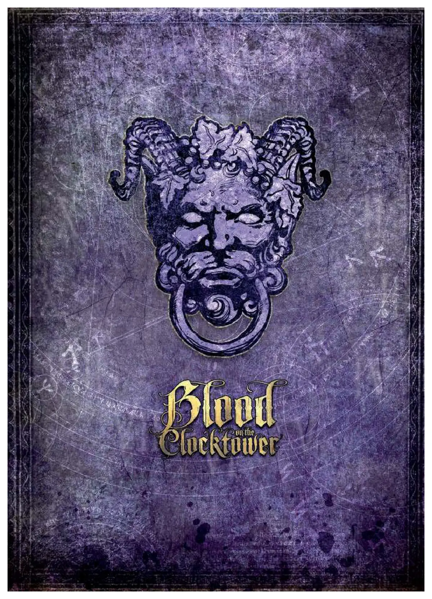
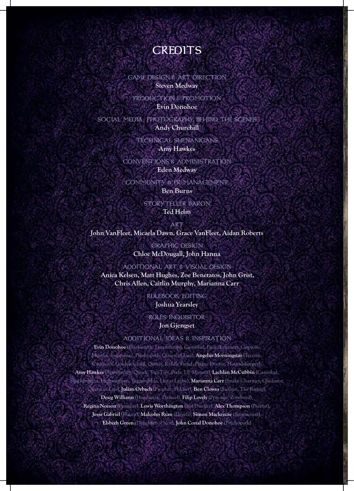
📝 第 2 页 AI 机翻对照（点击展开）
制作人员
游戏设计与艺术指导
Steven Medway
制作与推广
Evin Donohoe
社交媒体、摄影、幕后花絮
Andy Churchill
技术恶作剧
Amy Hawkes
展会与行政
Eden Medway
社区与公关管理
Ben Burns
故事讲述男爵
Ted Helm
艺术
John VanFleet, Micaela Dawn, Grace VanFleet, Aidan Roberts
平面设计
Chloe McDougall, John Hanna
额外艺术与视觉设计
Anica Kelsen, Matt Hughes, Zoe Benetatos, John Grist,
Chris Allen, Caitlin Murphy, Marianna Carr
规则书编辑
Joshua Yearsley
规质询问者
Jon Gjengset
额外想法与灵感
Evin Donohoe (铁匠, 狼人, 食人族, 小精灵, 工程师, 模仿者,
骗子, 失眠者, 心理变态者, 谎言之王), Angelus Morningstar (大亨,
浪子, 金童, 女王, 谜语恶魔, 瘟疫医生, 猎犬管理员),
Amy Hawkes (药剂师, 庸医, 蒂皮-蒂皮, 小精灵, 小怪兽), Lachlan McCubbin (食人族,
shacklewight, 强盗, yaggababble, Lim ei Legba), Marianna Carr (蛇夫角斗士,
谎言之王), Julian Orbach (先知, 小提琴手), Ben Clowes (西西里人, 起义者),
Doug Williams (猎人, 少女), Filip Lovely (囚犯, Zombuul),
Regina Neeson (熟悉), Lewis Worthington ( vat 居民), Alex Thompson (和平主义者),
Jesse Gabriel (萦绕), Malcolm Ryan (Lleech), Simon Mackenzie (召唤师),
Elsbeth Green (诺克斯之女), John Conal Donohoe (心理变态者)
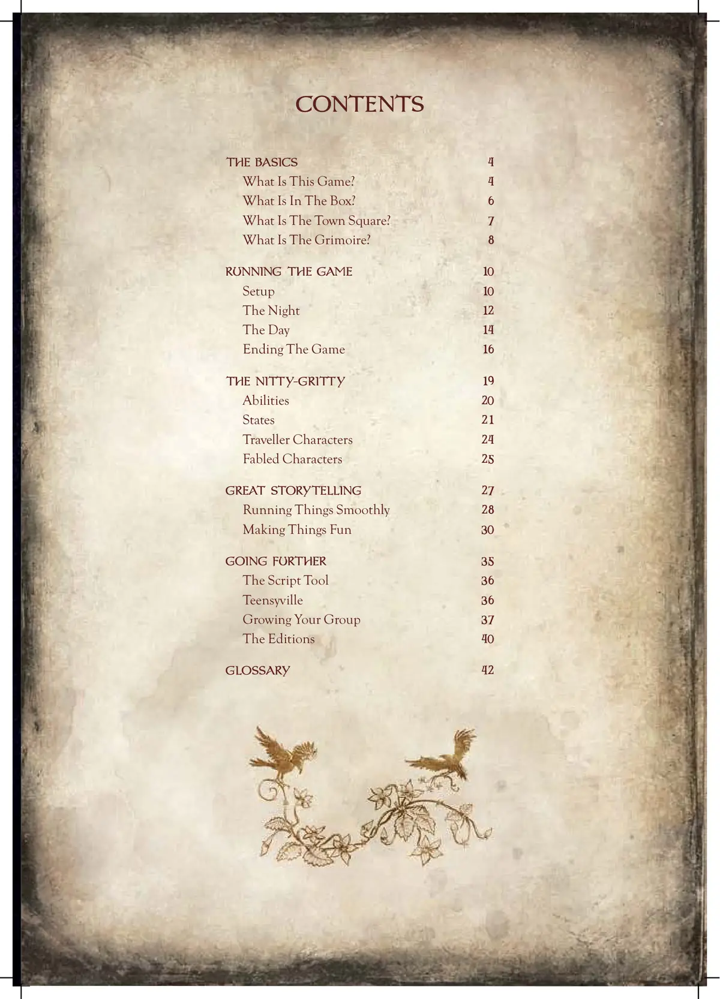
📝 第 3 页 AI 机翻对照（点击展开）
目录
基础知识
这是什么游戏？
盒子里有什么？
什么是镇广场？
什么是魔法书？
运行游戏
设置
夜晚
白天
结束游戏
细节
能力
状态
旅行者角色
传奇角色
优秀的故事讲述
流畅运行
使游戏有趣
进一步探索
脚本工具
Teensyville
扩大你的群体
版本
术语表
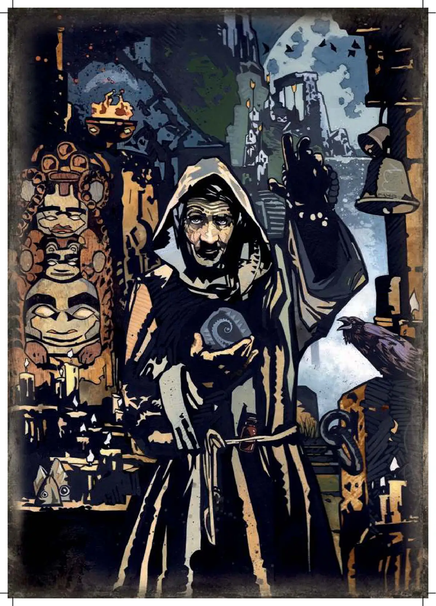
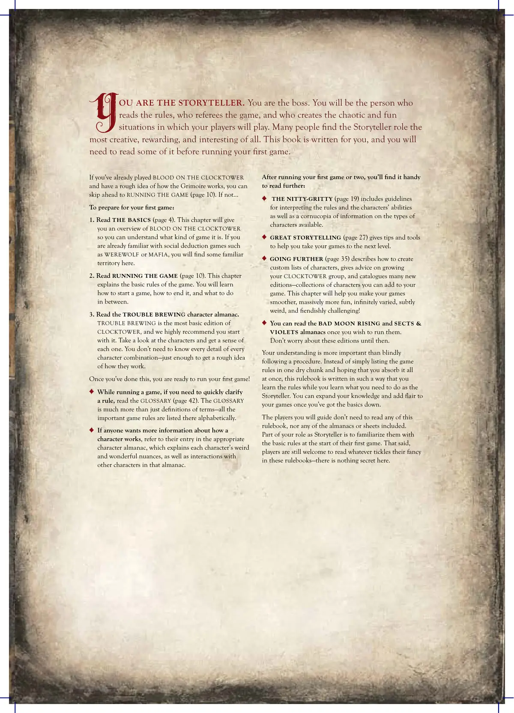
📝 第 5 页 AI 机翻对照（点击展开）
如果你已经玩过《BLOOD ON THE CLOCKTOWER》（钟楼血案）并且对魔法书（Grimoire）的工作方式有大致了解，你可以直接跳到"RUNNING THE GAME"（第10页）。如果没有...
为你的第一场游戏做准备：
- 阅读"THE BASICS"（基础规则，第4页）。这一章将为你概述《BLOOD ON THE CLOCKTOWER》，让你了解这是一种什么样的游戏。如果你已经熟悉像"WEREWOLF"（狼人）或"MAFIA"（黑手党）这类社交推理游戏，你会发现这里有一些熟悉的元素。
- 阅读"RUNNING THE GAME"（第10页）。这一章解释了游戏的基本规则。你将学习如何开始游戏、如何结束游戏，以及中间该做什么。
- 阅读"TROUBLE BREWING"（麻烦 brewing）角色年鉴。"TROUBLE BREWING"是"CLOCKTOWER"最基础的版本，我们强烈建议你从它开始。看看这些角色，对每个角色有个大致了解。你不需要了解每个角色组合的所有细节——只需要足够了解它们如何运作即可。
完成这些后，你就可以准备运行你的第一场游戏了！
在运行游戏时，如果需要快速澄清规则，请阅读"GLOSSARY"（术语表，第42页）。"GLOSSARY"不仅仅是术语的定义——所有重要的游戏规则都按字母顺序列在那里。
如果有人想了解更多关于角色如何运作的信息，请查阅相应角色年鉴中的条目，其中解释了每个角色的奇特而美妙的细微差别，以及与该年鉴中其他角色的互动。
在运行了一两场游戏后，你会发现阅读以下内容很有帮助：
"THE NITTY-GRITTY"（细节详解，第19页）包括解释规则和角色能力的指南，以及关于可用角色类型的丰富信息。
"GREAT STORYTELLING"（精彩叙事，第27页）提供技巧和工具，帮助你将游戏提升到新水平。
"GOING FURTHER"（深入探索，第35页）描述了如何创建自定义角色列表，提供了关于扩大你的"CLOCKTOWER"游戏组的建议，并收录了许多新版本——你可以添加到游戏中的角色集合。这一章将帮助你使游戏更流畅、更有趣、变化无穷、微妙怪异，且极具挑战性！
当你想要运行"BAD MOON RISING"和"SECTS & VIOLETS"版本时，可以阅读它们的年鉴。在此之前不必担心这些版本。
你的理解比盲目遵循程序更重要。这本规则书不是以枯燥的方式一次性列出所有游戏规则并希望你能全部吸收，而是这样编写的：你在学习作为叙事者（Storyteller）需要做什么的同时学习规则。一旦掌握了基础知识，你就可以扩展知识，为你的游戏增添风采。
你将引导的玩家不需要阅读这本规则书，也不需要阅读其中包含的任何年鉴或表格。
作为故事讲述者(Storyteller)的部分职责是在他们第一局游戏开始时向他们介绍基本规则。话虽如此，玩家仍然欢迎阅读这些规则书中任何他们感兴趣的内容——这里没有任何秘密。
你就是故事讲述者(Storyteller)。你是老板。你将是阅读规则、裁判游戏并为你的玩家创造混乱有趣情境的人。许多人发现故事讲述者角色是所有角色中最具创造性、最有回报和最有趣的。本书是为你而写的，在运行你的第一局游戏之前，你需要阅读其中的一些内容。
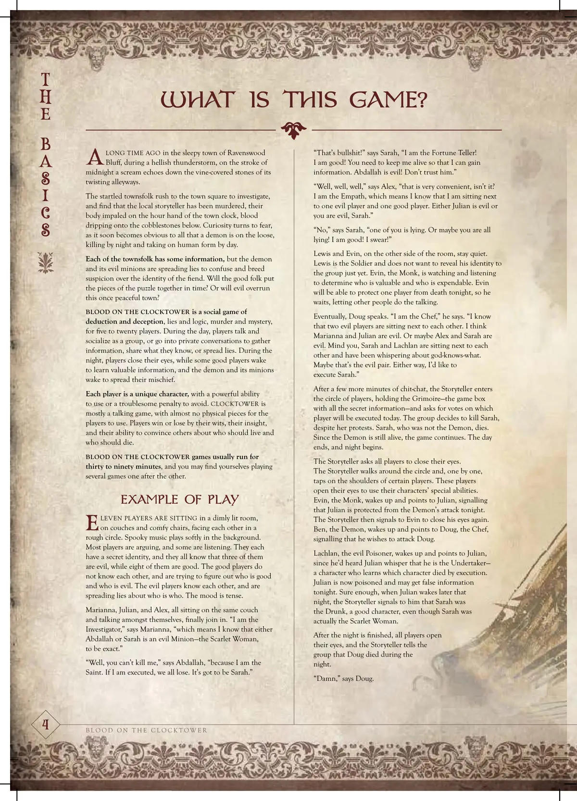
📝 第 6 页 AI 机翻对照（点击展开）
"这太扯了！"莎拉说，"我是预言家！
我很擅长！你需要让我活着，这样我才能获取信息。
阿卜杜拉是邪恶的！不要相信他。"
"哦，哦，哦，"亚历克斯说，"这可真方便，不是吗？
我是共情者，这意味着我知道我旁边坐着一个邪恶玩家和一个善良玩家。
要么朱利安是邪恶的，要么你是邪恶的，莎拉。"
"不，"莎拉说，"你们中有人在撒谎。或者也许你们所有人都在撒谎！
我是善良的！我发誓！"
房间另一边的刘易斯和埃文保持沉默。
刘易斯是士兵，还不想向群体揭示自己的身份。
埃文是僧侣，正在观察和聆听，以确定谁有价值，谁可以被牺牲。
埃文今晚将能够保护一个玩家免于死亡，所以他等待着，让别人去说话。
最终，道格开口了。"我是厨师，"他说，"我知道有两个邪恶玩家坐在一起。
我认为玛丽安娜和朱利安是邪恶的。或者亚历克斯和莎拉是邪恶的。
提醒你们，莎拉和拉克兰坐在一起，一直在窃窃私语，不知道在说什么。
也许那就是邪恶的一对。无论如何，我想处决莎拉。"
在几分钟的闲聊之后，故事讲述者进入玩家圈，拿着《魔典》——装有所有秘密信息的游戏盒——并要求投票决定今天将处决哪个玩家。
群体决定杀死莎拉，尽管她抗议。莎拉不是恶魔，她死了。
由于恶魔仍然活着，游戏继续。白天结束，夜晚开始。
故事讲述者要求所有玩家闭上眼睛。
故事讲述者绕着圈子走，依次轻拍某些玩家的肩膀。
这些玩家睁开眼睛，使用他们角色的特殊能力。
埃文，僧侣，醒来并指向朱利安，表示朱利安今晚受到保护，免受恶魔的攻击。
然后故事讲述者示意埃文再次闭上眼睛。
本，恶魔，醒来并指向道格，厨师，表示他希望攻击道格。
拉克兰，邪恶的投毒者，醒来并指向朱利安，因为他听到朱利安低声说他是掘墓人——一个通过处决了解哪个角色死亡的角色。
朱利安现在被下毒了，今晚可能会得到错误的信息。果然，当朱利安当晚晚些时候醒来时，故事讲述者向他示意莎拉是醉汉，一个善良的角色，尽管莎拉实际上是红衣女子。
夜晚结束后，所有玩家睁开眼睛，故事讲述者告诉群体道格在夜间死亡了。
"该死，"道格说。
很久很久以前，在瞌睡镇拉文斯伍德悬崖，在一个地狱般的雷暴之夜，在午夜钟声敲响的那一刻，一声尖叫沿着覆盖着藤蔓的石头回荡
扭曲的小巷。
受惊的镇民们涌向镇广场进行调查，
发现当地的说书人被谋杀了，他们的身体被插在镇时钟的时针上，鲜血滴落在下方的鹅卵石上。好奇心转为恐惧，
因为很快所有人都很明显地知道一个恶魔正在游荡，夜间杀人，白天则化为人形。
每个镇民都掌握一些信息，但恶魔及其邪恶爪牙正在散布谎言，以混淆视听并滋生对恶魔身份的怀疑。善良的人们能及时拼凑出谜题的碎片吗？还是邪恶将吞噬这个曾经和平的小镇？
《钟楼血案》(BLOOD ON THE CLOCKTOWER) 是一款 deduction and deception（推理与欺骗）、lies and logic（谎言与逻辑）、murder and mystery（谋杀与神秘）的社交游戏，适合五到二十名玩家。白天，玩家们作为一个群体交谈和社交，或者进行私人对话以收集信息、分享已知信息或散布谎言。夜晚，玩家们闭上眼睛，而一些善良的玩家会醒来获取有价值的信息，恶魔及其爪牙则会醒来进行他们的恶作剧。
每个玩家都是一个独特的角色，拥有可以使用的能力或需要避免的麻烦惩罚。《钟楼血案》基本上是一个说话游戏，玩家几乎没有可使用的实体部件。玩家凭借智慧、洞察力和说服他人关于谁应该生谁应该死的能力来决定胜负。
《钟楼血案》游戏通常持续三十到九十分钟，你们可能会发现一个接一个地玩好几局游戏。
游戏示例
十一名玩家坐在光线昏暗的房间里，
在沙发和舒适的椅子上，大致围成一个圈面对面坐着。
背景中播放着 spooky music（ spooky 音乐）。
大多数玩家在争论，有些在倾听。每个人都有一个秘密身份，他们都知道其中三人是邪恶的，而八人是善良的。善良的玩家彼此不认识，正在试图找出谁是谁是邪恶的。邪恶的玩家彼此认识，正在散布关于谁是谁的谎言。气氛紧张。
Marianna、Julian 和 Alex 都坐在同一张沙发上互相交谈，最后加入了讨论。"我是调查员（Investigator）"，Marianna 说，"这意味着我知道 Abdallah 或 Sarah 是邪恶的爪牙（Minion）——确切地说是 Scarlet Woman（猩红妇人）。"
"你不能杀我，"Abdallah 说，"因为我是圣人（Saint）。如果我被处决，我们都会输。一定是 Sarah。"
基
础
知
识
这是什么游戏？
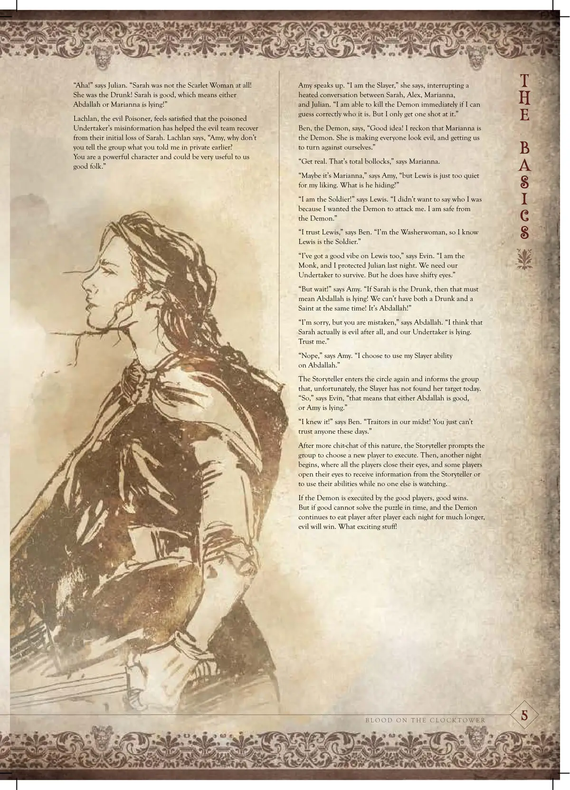
📝 第 7 页 AI 机翻对照（点击展开）
艾米发言了。"我是屠魔者，"她说，打断了莎拉、亚历克斯、玛丽安娜和朱利安之间激烈的对话。"如果我猜对恶魔是谁，我就能立即杀死它。但我只有一次机会。"
本，恶魔，说："好主意！我猜玛丽安娜是恶魔。她让每个人都看起来很邪恶，并让我们互相敌对。"
"别傻了。那完全是胡说八道，"玛丽安娜说。
"也许是玛丽安娜，"艾米说，"但刘易斯太安静了，不合我意。他在隐藏什么？"
"我是士兵！"刘易斯说。"我不想说出我是谁，因为我想让恶魔攻击我。我对恶魔是免疫的。"
"我相信刘易斯，"本说。"我是洗衣妇，所以我知道刘易斯是士兵。"
"我也对刘易斯有好感，"埃文说。"我是僧侣，昨晚我保护了朱利安。我们需要我们的殡葬师活下来。但他确实眼神飘忽。"
"但是等等！"艾米说。"如果莎拉是醉汉，那一定意味着阿卜杜拉在撒谎！我们不可能同时有一个醉汉和一个圣徒！是阿卜杜拉！"
"很抱歉，但你搞错了，"阿卜杜拉说。"我认为莎拉实际上是邪恶的，而我们的殡葬师在撒谎。相信我。"
"不，"艾米说。"我选择用我的屠魔者能力对付阿卜杜拉。"
叙述者再次进入圈子，告诉不幸的是，屠魔者今天没有找到她的目标。
"所以，"埃文说，"这意味着要么阿卜杜拉是好人，要么艾米在撒谎。"
"我就知道！"本说。"我们中间有叛徒！如今你就是不能相信任何人。"
在更多类似的闲聊之后，叙述者提示小组选择一名新玩家处决。然后，又一个夜晚开始，所有玩家闭上眼睛，一些玩家睁开眼睛接收来自叙述者的信息或使用他们的能力，而其他人则没有观看。
如果恶魔被好人处决，好人获胜。但如果好人不能及时解开谜题，恶魔继续每晚吃掉一个玩家，持续更长时间，邪恶将获胜。多么刺激的事情！
"啊哈！"朱利安说。"莎拉根本不是红衣妇人！她是醉汉！莎拉是好人，这意味着要么阿卜杜拉要么玛丽安娜在撒谎！"
邪恶的投毒者拉克兰感到满意，被毒死的殡葬师的错误信息帮助邪恶团队从最初失去莎拉的损失中恢复过来。拉克兰说："艾米，你为什么不告诉小组你之前私下告诉我的事情？你是一个强大的角色，对我们这些好人来说可能非常有用。"
基
础
知
识
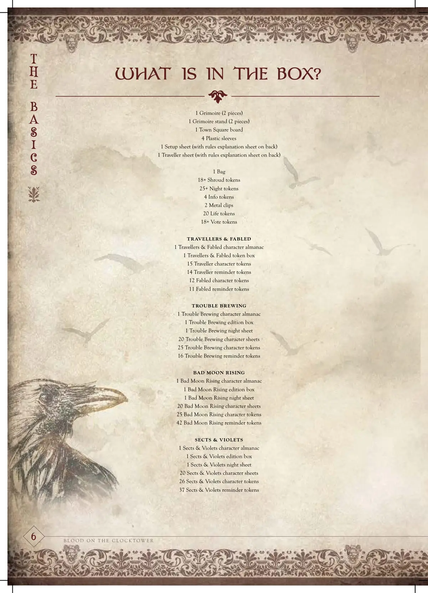
📝 第 8 页 AI 机翻对照（点击展开）
1 魔法书（2个）
1 魔法书支架（2个）
1 市政广场版图
4 塑料封套
1 设置卡（背面附规则说明卡）
1 旅行者卡（背面附规则说明卡）
1 布袋
18+ 遮蔽指示物
25+ 夜晚指示物
4 信息指示物
2 金属夹
20 生命指示物
18+ 投票指示物
旅行者与传说
1 旅行者与传说角色年鉴
1 旅行者与传说指示物盒
15 旅行者角色指示物
14 旅行者提醒指示物
12 传说角色指示物
11 传说提醒指示物
麻烦 brewing
1 麻烦 brewing 角色年鉴
1 麻烦 brewing 版本盒
1 麻烦 brewing 夜晚卡
20 麻烦 brewing 角色卡
25 麻烦 brewing 角色指示物
16 麻烦 brewing 提醒指示物
坏月升起
1 坏月升起角色年鉴
1 坏月升起版本盒
1 坏月升起夜晚卡
20 坏月升起角色卡
25 坏月升起角色指示物
42 坏月升起提醒指示物
教派与紫罗兰
1 教派与紫罗兰角色年鉴
1 教派与紫罗兰版本盒
1 教派与紫罗兰夜晚卡
20 教派与紫罗兰角色卡
26 教派与紫罗兰角色指示物
37 教派与紫罗兰提醒指示物
T
H
E
B
A
S
I
C
S
盒子里有什么？
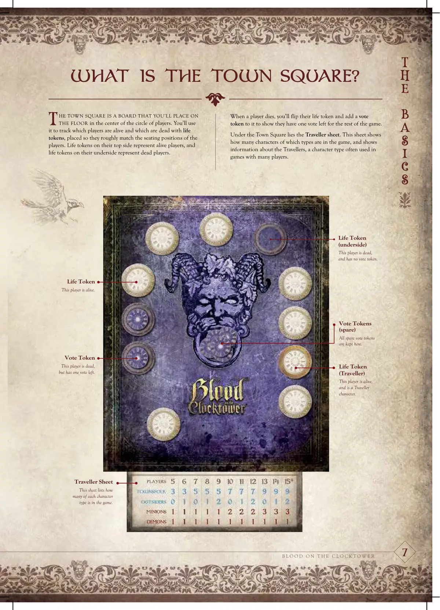
📝 第 9 页 AI 机翻对照（点击展开）
T
H
E
B
A
S
I
C
S
生命指示物
（背面）
这个玩家已死亡，
没有投票指示物。
生命指示物
（旅行者）
这个玩家存活，
是旅行者角色。
投票指示物
（备用）
所有备用投票指示物
都放在这里。
生命指示物
这个玩家存活。
投票指示物
这个玩家已死亡，
但还有一个投票权。
旅行者卡
这张卡片列出了游戏中每种角色类型的数量。
T
市政广场是一块你将放置在
玩家圈中央地板上的版图。你将用它来追踪哪些玩家存活、哪些玩家死亡，使用生命指示物放置，使其大致匹配玩家的座位位置。朝上的生命指示物代表存活的玩家，朝下的生命指示物代表死亡的玩家。
当玩家死亡时，你将翻转他们的生命指示物，并在上面添加一个投票指示物，以显示他们在游戏剩余时间内还有一个投票权。
市政广场下方是旅行者卡。这张卡片显示了游戏中有哪些类型以及多少数量的角色，并提供了关于旅行者的信息，这是一种在多人游戏中经常使用的角色类型。
什么是市政广场？
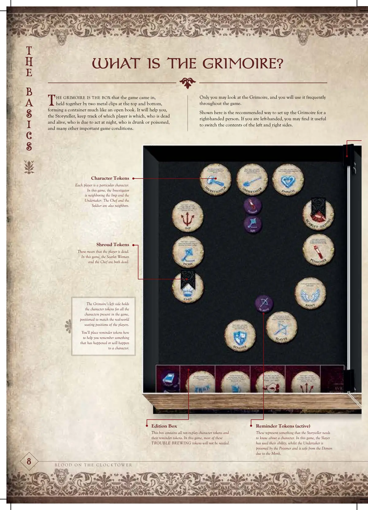
📝 第 10 页 AI 机翻对照（点击展开）
基
础
知
识
魔法书（Grimoire）的左侧存放着游戏中所有角色的指示物，其位置与玩家在现实世界中的座位位置相对应。你将在此处放置提醒指示物，以帮助你记住角色发生或将发生的事情。
遮罩指示物（Shroud Tokens）
这些表示该玩家已死亡。在本游戏中，红衣女子（Scarlet Woman）和厨师（Chef）都已死亡。
角色指示物（Character Tokens）
每位玩家扮演一个特定角色。在本游戏中，调查员（Investigator）与恶魔（Imp）和殡葬师（Undertaker）相邻。厨师（Chef）和士兵（Soldier）也是相邻的。
版本盒（Edition Box）
这个盒子包含所有未使用角色的指示物及其提醒指示物。在本游戏中，大多数这些"麻烦 brewing"（TROUBLE BREWING）指示物将不需要使用。
提醒指示物（活跃）（Reminder Tokens (active)）
这些表示故事讲述者（Storyteller）需要了解关于角色的某些信息。在本游戏中，猎人（Slayer）已使用其能力，而殡葬师（Undertaker）被投毒者（Poisoner）下毒，但由于僧侣（Monk）的保护，他免受恶魔（Demon）的伤害。
什么是魔法书（Grimoire）？
魔法书（THE GRIMOIRE）是游戏盒本身，由顶部的两个金属夹固定在一起，形成一个类似打开的书的容器。它将帮助你，故事讲述者，跟踪哪个玩家是哪个角色，谁已死亡谁还活着，谁将在夜晚行动，谁喝醉或中毒，以及许多其他重要的游戏状态。只有你可以查看魔法书，并且你将在整个游戏中频繁使用它。这里展示的是为右撇子玩家设置魔法书的推荐方式。如果你是左撇子，你可能会发现交换左右两侧的内容很有用。
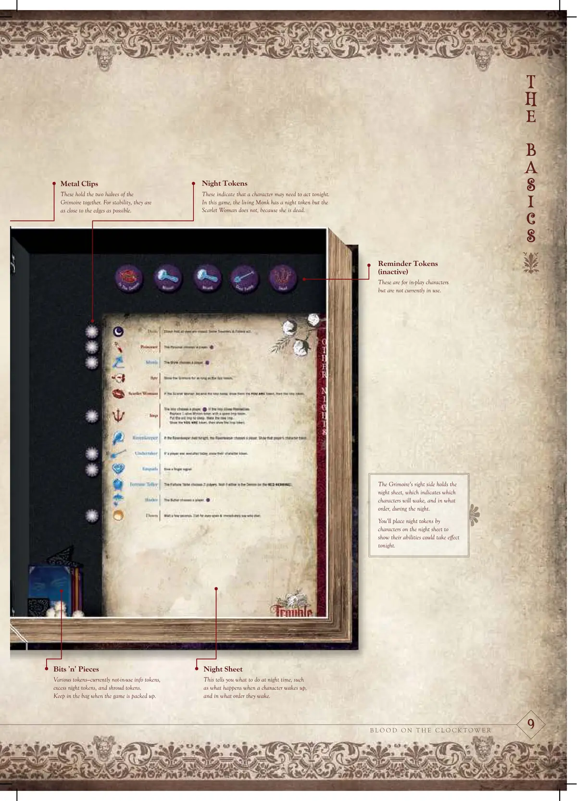
📝 第 11 页 AI 机翻对照（点击展开）
金属夹（Metal Clips）
这些夹子将魔法书的两个半部分固定在一起。为了稳定性，它们尽可能靠近边缘。
基
础
知
识
魔法书的右侧放置着夜晚表（night sheet），它指示哪些角色将在夜晚醒来，以及醒来的顺序。你将在夜晚表上角色旁边放置夜晚指示物（night tokens），以表示他们的能力今晚可能生效。
提醒指示物（非活跃）（Reminder Tokens (inactive)）
这些用于已参与游戏的角色，但目前未在使用中。
夜晚指示物（Night Tokens）
这些表示角色今晚可能需要行动。在本游戏中，活着的僧侣（Monk）有一个夜晚指示物，但红衣女子（Scarlet Woman）没有，因为她已死亡。
夜晚表（Night Sheet）
这告诉你夜晚该做什么，例如角色醒来时会发生什么，以及他们醒来的顺序。
零散部件（Bits 'n' Pieces）
各种指示物——当前未使用的信息指示物、多余的夜晚指示物和遮罩指示物。游戏打包时请保存在袋子中。
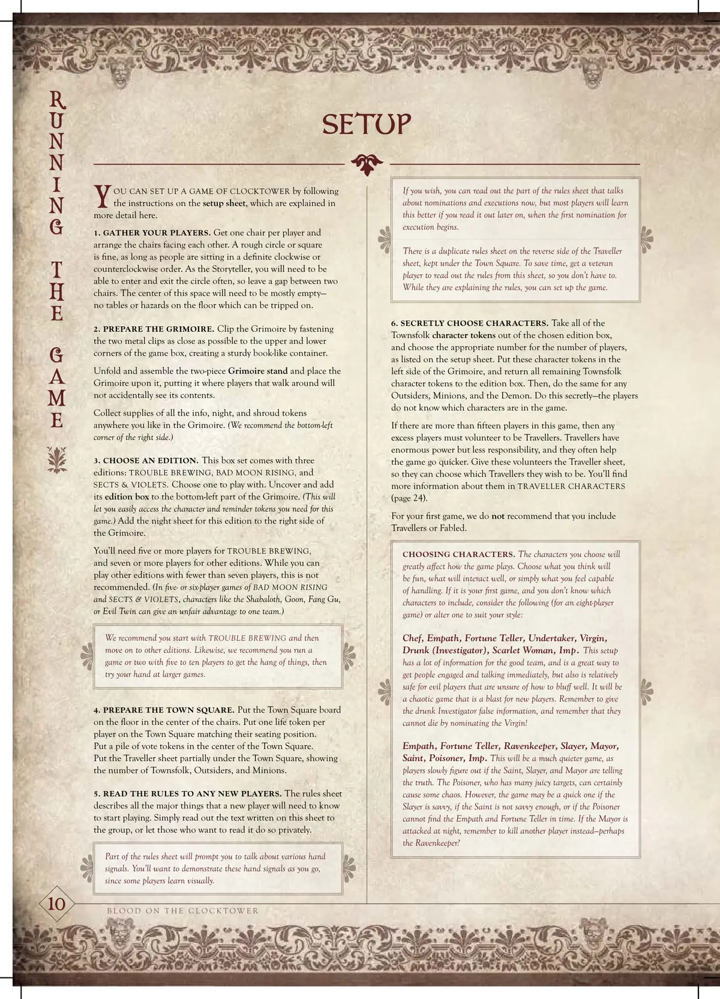
📝 第 12 页 AI 机翻对照（点击展开）
如果你愿意，现在可以宣读规则书中关于提名和处决的部分，但大多数玩家会在第一次提名处决开始时再听你宣读，这样能更好地学习这部分规则。
在城镇广场下方，旅行者表的背面有一份重复的规则表。为了节省时间，请让有经验的玩家宣读这份规则表的内容，这样你就不用读了。
在他们解释规则时，你可以设置游戏。
- 秘密选择角色。从所选版本盒中取出所有平民角色指示物，根据设置表上的玩家数量选择相应数量的角色。将这些角色指示物放入魔典的左侧，并将所有剩余的平民角色指示物放回版本盒。然后，对外来者、爪牙和恶魔角色进行同样的操作。请秘密进行——玩家不知道游戏中有哪些角色。
如果本局游戏有超过十五名玩家，那么多余的玩家必须自愿成为旅行者。旅行者拥有巨大的权力但责任较少，他们通常能帮助游戏进行得更快。给这些志愿者旅行者表，让他们选择自己想要扮演的旅行者角色。你可以在"旅行者角色"（第24页）中找到更多关于他们的信息。
对于你的第一局游戏，我们不建议你包含旅行者或传说角色。
选择角色。你选择的角色将极大地影响游戏玩法。选择你认为有趣的、能良好互动的，或者你觉得能够驾驭的角色。如果是你的第一局游戏，且不知道该包含哪些角色，可以考虑以下组合（针对八人游戏）或调整其中一个以适应你的风格：
厨师、共情者、占卜师、掘墓人、处女、醉汉（调查员）、 Scarlet Woman、小恶魔。这个配置为善良团队提供了大量信息，是让人们立即参与讨论并交流的好方法，但对于不确定如何有效欺骗的邪恶玩家来说也相对安全。这将是一场混乱的游戏，对新玩家来说非常有趣。记住要给醉汉调查员提供虚假信息，并且记住他们不能通过提名处女来死亡！
共情者、占卜师、守鸦人、屠夫、市长、圣徒、投毒者、小恶魔。这将是一场更安静的游戏，玩家们慢慢推断圣徒、屠夫和市长是否在说实话。拥有许多诱人目标的投毒者肯定能造成一些混乱。然而，如果屠夫很精明，或者圣徒不够精明，或者投毒者无法及时找到共情者和占卜者，游戏可能会很快结束。如果市长在夜间受到攻击，请记住杀死另一名玩家——也许是守鸦人？
游戏设置
你可以通过遵循设置说明表上的说明来设置一场《钟楼》(Clocktower)游戏，这里会进行更详细的解释。
- 召集玩家。为每位玩家准备一把椅子，并将椅子面对面排列。形成一个大致的圆形或方形即可，只要人们明确地按顺时针或逆时针顺序就坐。作为故事讲述者，你需要经常进出这个圆圈，所以在两把椅子之间留一个空隙。这个空间的中心需要保持大部分空旷——没有桌子或地板上的障碍物，以免被绊倒。
- 准备魔法书。通过将两个金属夹尽可能靠近游戏盒的上下角来固定魔法书，创造一个坚固的书籍状容器。展开并组装两件式魔法书支架，将魔法书放在支架上，放置在走动的玩家不会意外看到其内容的位置。
将所有信息、夜晚和阴影指示物收集在魔法书中的你喜欢的地方。（我们推荐右侧的左下角。）
- 选择一个版本。这个盒子套装包含三个版本：《麻烦 brewing》(TROUBLE BREWING)、《坏月亮升起》(BAD MOON RISING)和《教派与紫罗兰》(SECTS & VIOLETS)。选择一个进行游戏。揭开并添加其版本盒子到魔法书的左下部分。（这将让你轻松获取本游戏所需的角色和提醒指示物。）将此版本的夜晚表添加到魔法书的右侧。
《麻烦 brewing》需要五名或更多玩家，其他版本需要七名或更多玩家。虽然你可以用少于七名玩家玩其他版本，但不推荐这样做。（在《坏月亮升起》和《教派与紫罗兰》的五人或六人游戏中，像 Shabaloth、Goon、Fang Gu 或 Evil Twin 这样的角色可能会给一个团队带来不公平的优势。）
我们建议你从《麻烦 brewing》开始，然后再尝试其他版本。同样，我们建议你先组织五到十名玩家的游戏一两次来熟悉游戏，然后再尝试更大规模的游戏。
- 准备城镇广场。将城镇广场版图放在椅子的中央。为每位玩家在城镇广场上放置一个生命指示物，与他们的座位位置相对应。在城镇广场中央放置一堆投票指示物。将旅行者表部分放在城镇广场下方，显示镇民、外来者和仆从的数量。
- 向新玩家阅读规则。规则表描述了新玩家开始游戏所需了解的所有主要内容。只需将此表上的文本朗读给小组听，或者让想要阅读的人私下阅读。
规则表的一部分会提示你讨论各种手势信号。随着游戏的进行，你会想要演示这些手势信号，因为有些玩家是通过视觉学习的。
<!--page:M-->
设置
- 将游戏版图放在桌子中央。
- 每位玩家选择一种颜色的棋子，并拿取相应颜色的计分板和玩家标记。
- 将所有卡牌洗混，形成牌库，并将其放在版图旁。
- 每位玩家从牌库顶摸取5张卡牌作为起始手牌。
- 将起始玩家标记放在起始玩家位置上。
- 将起始玩家标记放在起始玩家位置上。
- 将起始玩家标记放在起始玩家位置上。
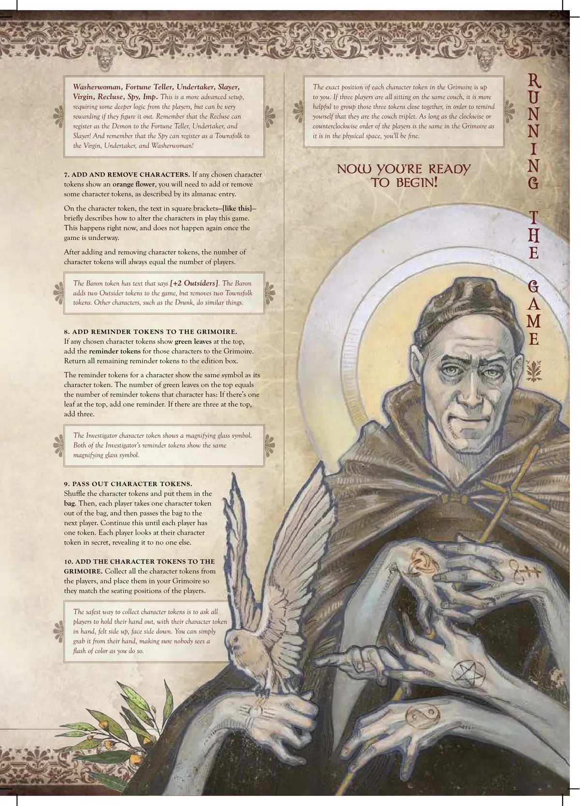
📝 第 13 页 AI 机翻对照（点击展开）
每个角色指示物在魔法书中的确切位置由你决定。如果三位玩家都坐在同一张沙发上，将这三个指示物放在一起会更有帮助，以便提醒自己他们是沙发三人组。只要玩家在魔法书中的顺时针或逆时针顺序与他们在物理空间中的顺序相同，你就没问题了。
现在你可以开始了！
洗衣妇、算命师、掘墓人、屠夫、处女、隐士、间谍、小恶魔。这是一种更高级的设置，需要玩家进行更深层次的逻辑推理，但如果他们能弄明白，会非常有成就感。记住，隐士可以向算命师、掘墓人和屠夫登记为恶魔！并且记住，间谍可以向处女、掘墓人和洗衣妇登记为镇民！
- 添加和移除角色。如果任何选定的角色指示物显示橙色花朵，你需要根据其年鉴条目的描述添加或移除一些角色指示物。角色指示物上方括号中的文字——[像这样]——简要描述了如何改变本局游戏中正在使用的角色。这步操作现在进行，一旦游戏开始后不再进行。
添加和移除角色指示物后，角色指示物的数量将始终等于玩家数量。男爵指示物上有写着"[+2 外来者]"的文字。男爵向游戏中添加两个外来者指示物，但移除两个镇民指示物。其他角色，如醉汉，也会做类似的事情。
- 向魔法书添加提醒指示物。如果任何选定的角色指示物顶部显示绿色叶子，将这些角色的提醒指示物添加到魔法书中。将所有剩余的提醒指示物放回版本盒中。一个角色的提醒指示物显示与其角色指示物相同的符号。顶部的绿色叶子数量等于该角色拥有的提醒指示物数量：如果顶部有一片叶子，添加一个提醒；如果顶部有三片叶子，添加三个。
侦探角色指示物显示放大镜符号。侦探的两个提醒指示物都显示相同的放大镜符号。
- 分发角色指示物。将角色指示物洗牌并放入袋中。然后，每位玩家从袋中取出一个角色指示物，然后将袋子传给下一位玩家。继续此过程，直到每位玩家都有一个指示物。每位玩家秘密查看自己的角色指示物，不向任何人展示。
10. 将角色指示物添加到魔法书中。从玩家处收集所有角色指示物，并将它们放入你的魔法书中，使其与玩家的座位位置相匹配。
收集角色指示物最安全的方式是要求所有玩家伸出手，手心向上，拿着他们的角色指示物。
在手牌中，正面朝下，毛绒面朝上。你可以直接从他们的手牌中拿走它，确保在这样做时没有人看到颜色的闪光。
运行游戏
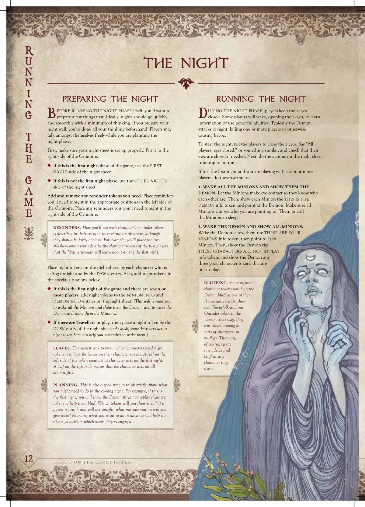
📝 第 14 页 AI 机翻对照（点击展开）
运行夜晚阶段
在夜晚阶段，玩家需要闭上眼睛。一些玩家会醒来，睁开眼睛，以获取信息或使用强力能力。通常情况下，恶魔会在夜晚发动攻击，杀死一名或多名玩家，或 otherwise 造成混乱。
开始夜晚时，告诉玩家闭上眼睛。说"所有玩家，请闭上眼睛"或类似的话，并在需要时检查他们的眼睛是否闭上。接下来，从上到下执行夜晚表上的行动。
如果是第一个夜晚，并且你正在与七名或更多玩家游戏，请执行这两个步骤：
1. 唤醒所有爪牙并向他们展示恶魔。让爪牙们进行眼神接触，以便他们互相认识。然后，向每个爪牙展示"这是恶魔"信息指示物，并指向恶魔。确保所有爪牙都能看到你指向的人。然后，让所有爪牙入睡。
- 唤醒恶魔并向所有爪牙展示。唤醒恶魔，向他们展示"这些是你的爪牙"信息指示物，然后指向每个爪牙。接着，向恶魔展示"这些角色不在游戏中"信息指示物，并向恶魔展示任何三个不在游戏中的善良角色指示物。
虚张声势。向恶魔展示这些角色指示物将帮助恶魔虚张声势扮演其中之一。通常最好向恶魔展示两个镇民和一个外来者指示物——这样，他们可以选择各种角色来虚张声势扮演。当然，他们可以忽略这个建议，虚张声势扮演任何他们想要的角色。
准备夜晚
在运行夜晚阶段本身之前，你需要先准备一些事情。理想情况下，夜晚阶段应该快速流畅地进行，尽量减少思考。如果你充分准备夜晚，就已经提前完成了所有思考！在你计划夜晚阶段时，玩家可以自由交谈。
首先，确保你的夜晚表设置正确。将其放在魔典的右侧。
如果这是游戏的第一个夜晚阶段，使用夜晚表的"第一个夜晚"面。
如果这不是第一个夜晚阶段，使用夜晚表的"其他夜晚"面。
添加和移除任何需要的提醒指示物。将今晚需要的提醒放在魔典左侧的适当位置。将今晚不需要的任何提醒放在魔典的右侧。
提醒。每个角色如何使用其提醒指示物在其角色年鉴的条目中有描述，尽管它们应该相当明显。例如，你将在女洗衣工将在第一个夜晚了解的两个玩家的角色指示物旁放置两个女洗衣工提醒指示物。
在夜晚表上放置夜晚指示物，在每个今晚行动的角色和"黎明"条目旁。另外，在以下特殊情况下添加夜晚指示物。
如果这是游戏的第一夜且玩家有七人或更多，则在夜表上的仆从信息和恶魔信息条目中添加夜指示物。（这会提醒你唤醒所有仆并向他们展示恶魔，并唤醒恶魔并向他们展示仆从。）
如果游戏中存在旅行者，则在夜表的黄昏条目旁放置一个夜指示物。（在黄昏时，一些旅行者会行动——这里的夜指示物可以帮助你记得唤醒他们。）
叶子。知道哪些角色需要夜指示物最简单的方法是查看他们角色指示物上的叶子。指示物左侧的叶子表示该角色在第一夜行动。右侧的叶子表示该角色在所有其他夜晚行动。
规划。这也是短暂思考你可能在即将到来的夜晚需要做什么的好时机。例如，如果是第一夜，你将向恶魔展示三个未出场的角色指示物以帮助他们虚张声势。你会向他们展示哪些指示物？如果某个玩家喝醉了且将在今晚行动，你会给他们什么错误信息？提前知道你想要做什么将有助于夜晚进行得更快，从而保持玩家的参与度。
游戏进行
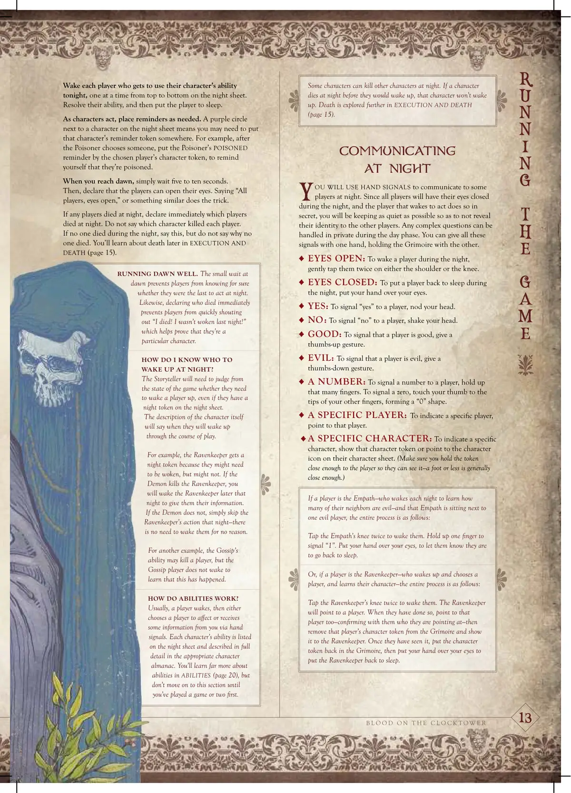
📝 第 15 页 AI 机翻对照（点击展开）
有些角色可以在夜间杀死其他角色。如果一个角色在醒来之前就在夜间死亡，该角色将不会醒来。死亡在"处决与死亡"（第15页）中有更详细的说明。
夜间交流
夜间交流
你将使用手势信号在夜间与某些玩家交流。由于所有玩家在夜间都会闭着眼睛，而醒来的玩家是秘密行动的，你将尽可能保持安静，以免向其他玩家透露他们的身份。任何复杂的问题都可以在白天阶段私下处理。你可以用一只手给出所有这些信号，另一只手拿着《魔典》。
睁眼：在夜间唤醒玩家时，轻轻拍打其肩膀或膝盖两次。
闭眼：在夜间让玩家重新入睡时，将手放在眼睛上。
是：向玩家表示"是"，点头。
否：向玩家表示"否"，摇头。
好：向玩家表示该玩家是好人，竖起大拇指。
坏：向玩家表示该玩家是坏人，竖起大拇指向下。
数字：向玩家表示一个数字，伸出相应数量的手指。表示零时，将拇指触摸到其他手指的指尖，形成一个"0"形状。
特定玩家：指示特定玩家，指向该玩家。
特定角色：指示特定角色，展示该角色指示物或指向其角色卡上的角色图标。（确保你将指示物拿得离玩家足够近，让他们能看到——一英尺或更近的距离通常足够了。）
如果一个玩家是共情者（每晚醒来以了解其邻居中有多少是坏人），并且这个共情者坐在一个坏人旁边，整个过程如下：
轻拍共情者的膝盖两次唤醒他们。竖起一根手指表示"1"。将手放在眼睛上，告诉他们要回去睡觉。
或者，如果一个玩家是乌鸦守护者（醒来并选择一个玩家，然后得知该玩家的角色），整个过程如下：
轻拍乌鸦守护者的膝盖两次唤醒他们。乌鸦守护者会指向一个玩家。当他们这样做时，也指向那个玩家——向他们确认他们指向的是谁——然后从《魔典》中取出该玩家的角色指示物并展示给乌鸦守护者。一旦他们看过，将角色指示物放回《魔典》，然后将手放在眼睛上，让乌鸦守护者重新入睡。
唤醒每个今晚可以使用其角色能力的玩家，按照夜间表格从上到下依次进行。解决他们的能力，然后让玩家入睡。
随着角色行动，根据需要放置提醒物。夜间表格上角色旁边的紫色圆圈表示你可能需要将
将那个角色的指示物放在某处。例如，在投毒者选择某人后，将投毒者的"已投毒"指示物放在被选玩家的角色指示物旁，提醒你自己他们已被投毒。
当你到达黎明时，只需等待五到十秒钟。然后，宣布玩家可以睁开眼睛。说"所有玩家，睁开眼睛"或类似的话即可。
如果有玩家在夜间死亡，立即宣布哪些玩家在夜间死亡。不要说哪个角色杀死了每个玩家。
如果夜间没有人死亡，就这样说，但不要说明为什么没有人死亡。你将在稍后的"处决与死亡"部分（第15页）了解到死亡的情况。
如何正确运行黎明。黎明时短暂的等待防止玩家确定自己是否是夜间最后行动的人。
同样，立即宣布谁死亡可以防止玩家快速喊出"我死了！我昨晚没有被叫醒！"这有助于证明他们是某个特定角色。
我如何知道在夜间叫醒谁？
主持人需要根据游戏状态判断是否需要叫醒玩家，即使他们在夜间表上有夜间指示物。
角色本身的描述会说明他们在游戏过程中何时会被叫醒。
例如，乌鸦守护者获得一个夜间指示物，因为他们可能需要被叫醒，但也可能不需要。如果恶魔杀死了乌鸦守护者，你将在当晚晚些时候叫醒乌鸦守护者，向他们提供信息。如果恶魔没有杀死他们，就简单跳过乌鸦守护者当晚的行动——没有必要无缘无故地叫醒他们。
再举一个例子，八卦者的能力可能会杀死一个玩家，但八卦者玩家不会醒来得知这件事。
能力如何运作？
通常，一个玩家被叫醒，然后选择一个玩家影响，或者通过手势从你那里接收一些信息。每个角色的能力都列在夜间表上，并在相应的角色年鉴中有详细描述。你将在"能力"部分（第20页）了解更多关于能力的信息，但在玩过一两局游戏之前，不要继续阅读这一部分。
R
U
N
N
I
N
G
T
H
E
G
A
M
E
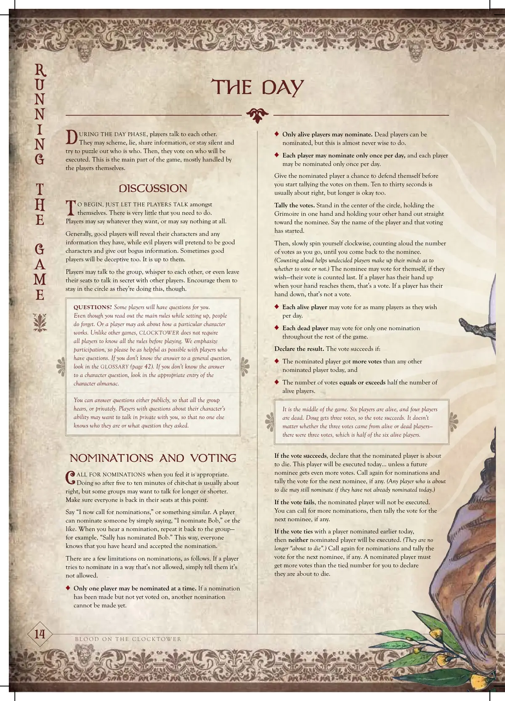
📝 第 16 页 AI 机翻对照（点击展开）
只有存活玩家可以提名。已死亡的玩家可以被提名，但这几乎从来都不是明智之举。
每位玩家每天只能提名一次，且每位玩家每天只能被提名一次。
在开始统计对被提名玩家的投票前，给被提名玩家一个为自己辩护的机会。十到三十秒通常比较合适，但更长也可以。
统计投票。站在圆圈中央，一手拿着《Grmoire》（魔法书），另一只手伸直指向被提名的玩家。说出玩家的名字并宣布投票开始。
然后，顺时针缓慢旋转自己，同时大声数出投票数量，直到回到被提名的玩家身边。
（大声计数有助于未决定的玩家决定是否投票。）被提名的玩家可以为自己投票，如果他们愿意——他们的票最后计算。如果当你的手到达某位玩家时，该玩家举起了手，那就是一票。如果玩家放下手，那就不是一票。
每位存活玩家每天可以投票给任意数量的玩家。
每位已死亡的玩家在游戏的其余时间里只能对一个提名进行投票。
宣布结果。如果满足以下条件，投票成功：
被提名的玩家获得的票数多于今天其他任何被提名的玩家，且
票数等于或超过存活玩家数量的一半。
游戏进行到中间阶段。六位玩家存活，四位玩家死亡。道格获得三票，因此投票成功。这三票来自存活玩家还是已死亡玩家并不重要——有三票，这是六位存活玩家数量的一半。
如果投票成功，宣布被提名的玩家即将死亡。这位玩家今天将被处决……除非未来的被提名者获得更多的票。再次征集提名，并为下一个被提名者统计投票，如果有任何提名的话。（任何即将死亡的玩家如果今天还没有提名过，仍然可以提名。）
如果投票失败，被提名的玩家将不会被处决。你可以征集更多提名，然后为下一个被提名者统计投票，如果有任何提名的话。
如果投票与今天早些时候被提名的玩家票数相同，那么两位被提名的玩家都不会被处决。（他们不再是"即将死亡"的状态。）再次征集提名，并为下一个被提名者统计投票，如果有任何提名的话。被提名的玩家必须获得超过平票数的票数，你才能宣布他们即将死亡。
在白天阶段，玩家互相交谈。他们可以密谋、撒谎、分享信息，或者保持沉默并试图弄清楚每个人的身份。然后，他们投票决定谁将被处决。这是游戏的主要部分，主要由玩家自己处理。
讨论
首先，让玩家们自己交谈。你需要做的事情很少。
玩家可以说任何他们想说的话，也可以一言不发。通常，好玩家会揭示自己的角色和任何他们拥有的信息，而邪恶玩家则会假装成好角色并给出虚假信息。有时候好玩家也会进行欺骗。这取决于他们自己。
玩家可以对整个小组说话，可以互相耳语，甚至可以离开座位与其他玩家秘密交谈。不过，鼓励他们在这样做时保持在圈内。
有问题吗？有些玩家会向你提问。尽管你在设置时已经宣读了主要规则，但人们确实会忘记。或者玩家可能会询问某个特定角色如何运作。与其他游戏不同，CLOCKTOWER 并不要求所有玩家在游戏前了解所有规则。我们强调参与性，所以请尽可能帮助有问题的玩家。如果你不知道一般性问题的答案，请查阅词典（第42页）。如果你不知道角色相关问题的答案，请查阅角色年鉴中的相应条目。
你可以公开回答问题，让整个小组都能听到，也可以私下回答。关于角色能力有疑问的玩家可能想与你私下交谈，这样其他人就不会知道他们是谁或问了什么问题。
提名与投票
当你觉得合适时，进行提名。在闲聊五到十分钟后进行通常比较合适，但有些小组可能想聊得更长或更短。确保此时每个人都回到自己的座位上。
说"我现在开始提名"，或类似的话。玩家只需说"我提名鲍勃"之类的话就可以提名某人。当你听到提名时，向小组重复一遍——例如，"莎莉提名了鲍勃"。这样，每个人都知道你已经听到并接受了这个提名。
提名有一些限制，如下所示。如果玩家尝试以不允许的方式提名，只需告诉他们这是不允许的。
一次只能提名一名玩家。如果已经提名但尚未投票，则不能进行其他提名。
白天
运
行
游
戏
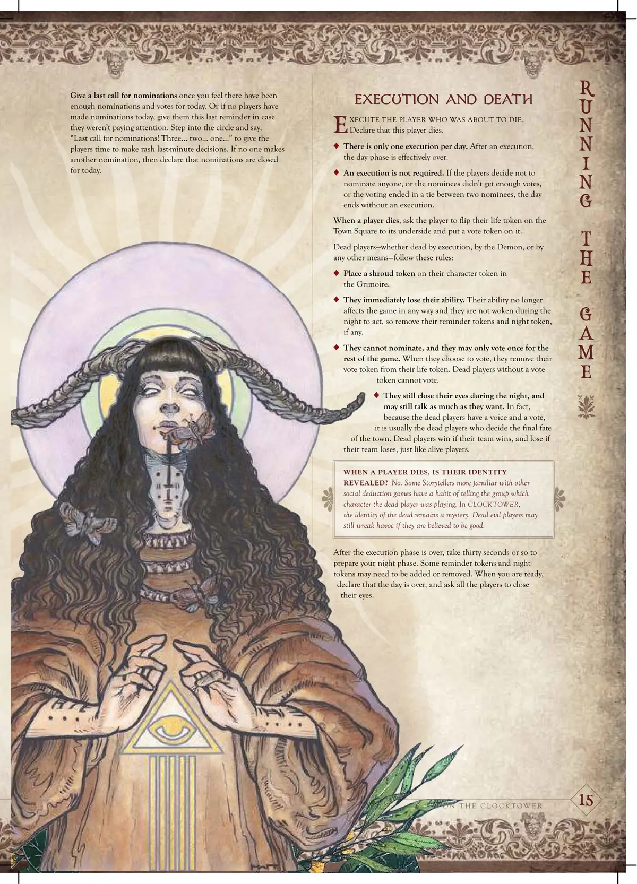
📝 第 17 页 AI 机翻对照（点击展开）
处决与死亡
执行即将死亡的玩家。
宣布该玩家死亡。
每天只有一次处决。一次处决后，白天阶段实际上就结束了。
处决不是必须的。如果玩家决定不提名任何人，或者被提名的玩家没有得到足够的票数，或者投票在两名被提名的玩家之间出现平局，那么当天将在没有处决的情况下结束。
当一名玩家死亡时，请该玩家将其生命指示物在镇广场上翻到背面，并在上面放置一个投票指示物。
死亡的玩家——无论是被处决、被恶魔杀死，或通过任何其他方式死亡——都遵循以下规则：
在其角色指示物上放置一个裹尸布指示物。
他们立即失去能力。他们的能力不再以任何方式影响游戏，并且在夜间不会被唤醒行动，因此移除他们的提醒指示物和夜间指示物（如果有）。
他们不能提名，并且在游戏的剩余时间里只能投票一次。当他们选择投票时，将其投票指示物从其生命指示物上移除。没有投票指示物的死亡玩家不能投票。
他们在夜间仍然闭上眼睛，并且仍然可以随意交谈。事实上，因为死亡玩家有发言权和投票权，通常是死亡玩家决定城镇的最终命运。死亡玩家如果他们的队伍获胜则获胜，如果他们的队伍失败则失败，就像活着的玩家一样。
当玩家死亡时，其身份会被揭示吗？不会。一些对其他社交推理游戏更熟悉的故事讲述者有习惯告诉群体死亡玩家扮演的是哪个角色。在《钟塔》中，死亡者的身份仍然是个谜。如果被认为是好人，死亡的邪恶玩家仍然可能造成破坏。
处决阶段结束后，花大约三十秒准备你的夜间阶段。一些提醒指示物和夜间指示物可能需要添加或移除。当你准备好后，宣布白天结束，并要求所有玩家闭上眼睛。
当你感觉今天的提名和投票已经足够时，进行最后一次提名呼吁。或者如果今天没有玩家进行提名，给他们这个最后的提醒，以防他们没有注意。走进圈子说："最后一次提名机会！三...二...一..."，给玩家时间做出冲动的最后决定。如果没有人再进行提名，那么宣布今天的提名结束。
运
行
游
戏
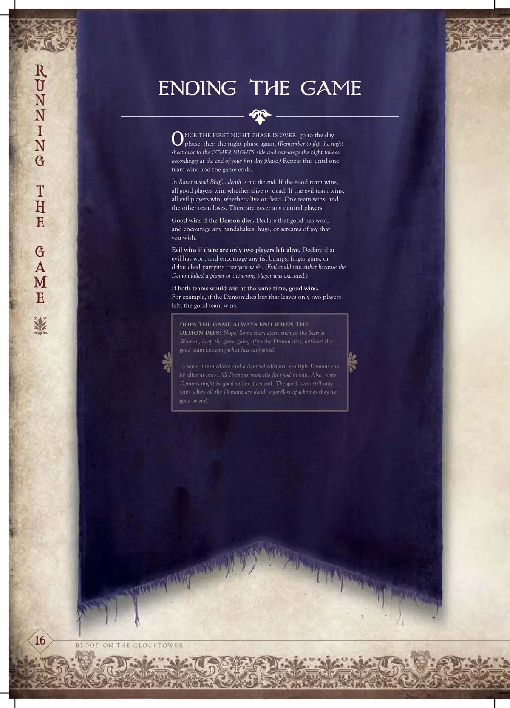
📝 第 18 页 AI 机翻对照（点击展开）
一旦第一个夜晚阶段结束，进入白天阶段，然后再进入夜晚阶段。（记住在第一个白天阶段结束时，将夜晚版面翻到"其他夜晚"面，并相应地重新安排夜晚指示物。）重复此过程，直到一方获胜，游戏结束。
在乌鸦林诡局（Ravenswood Bluff）中...死亡并非终点。如果善良阵营获胜，所有善良玩家都会获胜，无论生死。如果邪恶阵营获胜，所有邪恶玩家都会获胜，无论生死。一方获胜，另一方失败。永远不会有中立玩家。
如果恶魔死亡，善良阵营获胜。宣布善良阵营获胜，并鼓励任何你想要的握手、拥抱或欢呼声。
如果只剩下两名玩家存活，邪恶阵营获胜。宣布邪恶阵营获胜，并鼓励任何你想要的击拳、手指枪或狂欢派对。（邪恶阵营获胜可能是因为恶魔杀了一名玩家，或者错误地执行了一名玩家。）
如果双方同时获胜，则善良阵营获胜。
例如，如果恶魔死亡但只剩下两名玩家，那么善良阵营获胜。
游戏是否在恶魔死亡时总是结束？不！有些角色，如红衣女子（Scarlet Woman），在恶魔死亡后仍会继续游戏，而善良阵营并不知道发生了什么。
在一些中级和高级版本中，可能同时存在多个恶魔。所有恶魔都必须死亡，善良阵营才能获胜。此外，有些恶魔可能是善良而非邪恶的。无论恶魔是善良还是邪恶，善良阵营仍然只在所有恶魔都死亡时获胜。
结束游戏
R
U
N
N
I
N
G
T
H
E
G
A
M
E
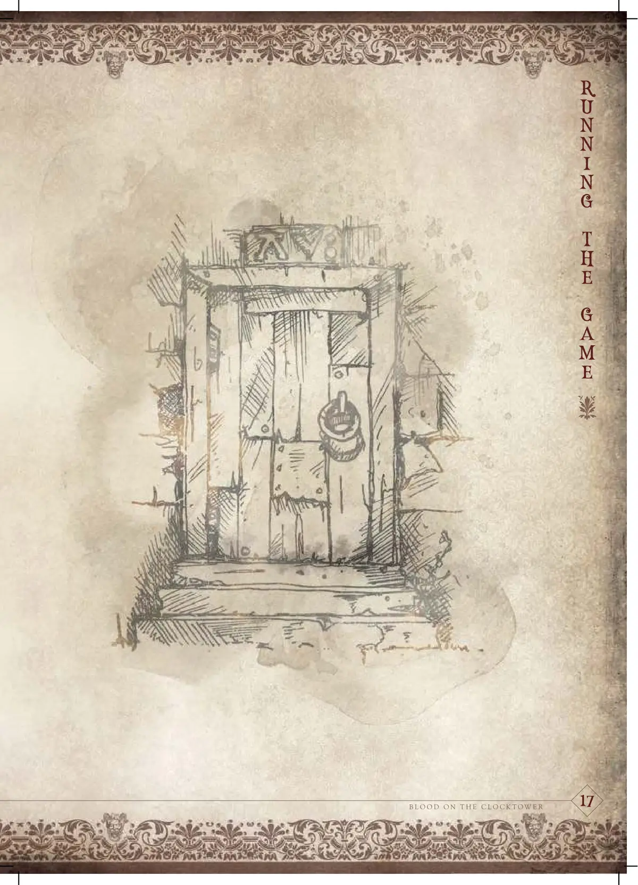
📝 第 19 页 AI 机翻对照（点击展开）
R
U
N
N
I
N
G
T
H
E
G
A
M
E
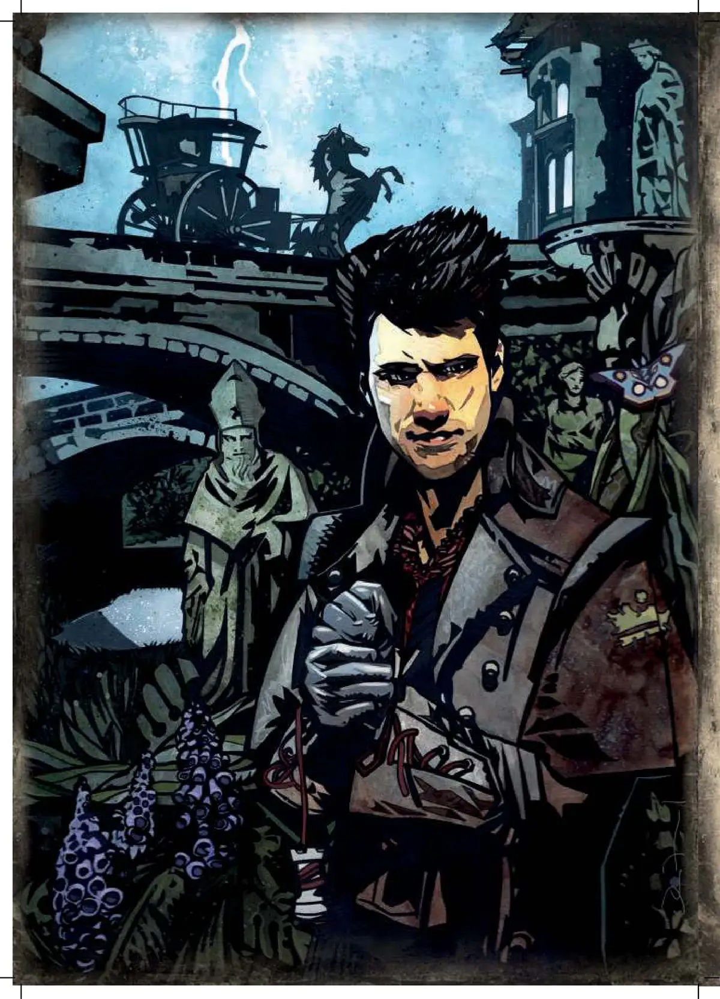
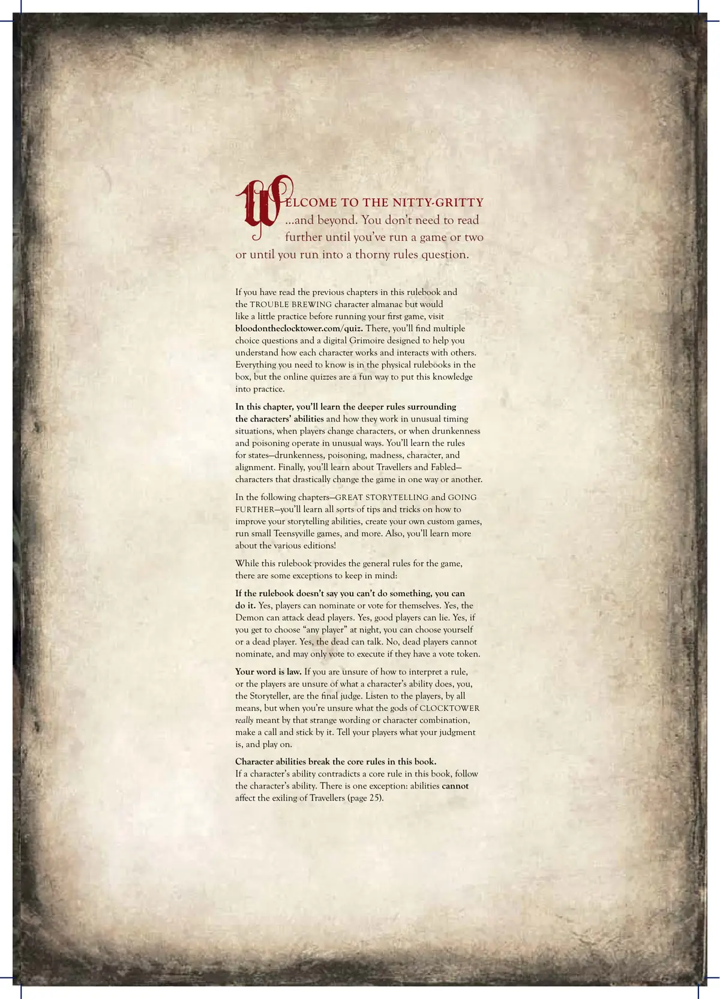
📝 第 21 页 AI 机翻对照（点击展开）
如果你已经阅读了本规则书的前几章和《TROUBLE BREWING角色年鉴》，但在进行第一场游戏前想要一些练习，请访问 bloodontheclocktower.com/quiz。在那里，你会找到选择题和数字Grimoire（魔法书），它们旨在帮助你了解每个角色如何运作以及如何与其他角色互动。你需要知道的一切都在盒子里的实体规则书中，但在线测验是一种将知识付诸实践的好方法。
在本章中，你将学习围绕角色能力的更深层次规则，以及它们在特殊时机情况下如何运作，例如当玩家更换角色时，或者当醉酒和中毒以特殊方式运作时。你将学习状态规则——醉酒、中毒、疯狂、角色和阵营。最后，你将了解旅行者和传说角色——这些角色以某种方式极大地改变了游戏。
在接下来的章节——《精彩叙事》和《更进一步》——你将学习各种技巧和窍门，包括如何提高你的叙事能力、创建自己的自定义游戏、运行小型Teensyville游戏等等。此外，你还将了解更多关于各种版本的信息！
虽然本规则书提供了游戏的一般规则，但需要注意一些例外情况：
如果规则书没有说你不能做某事，你就可以做。是的，玩家可以提名或投票给自己。是的，恶魔可以攻击已死亡的玩家。是的，善良玩家可以说谎。是的，如果你在晚上可以选择"任何玩家"，你可以选择自己或已死亡的玩家。是的，已死亡的玩家可以说话。不，已死亡的玩家不能提名，并且只有在拥有投票指示物时才能投票执行。
你的话就是法律。如果你不确定如何解释一条规则，或者玩家不确定某个角色的能力是什么，你，作为叙事者，是最终裁决者。当然要听取玩家的意见，但当你不确定CLOCKTOWER（钟楼）诸神通过那些奇怪的措辞或角色组合真正意味着什么时，做出决定并坚持它。告诉你的你的裁决是什么，然后继续游戏。
角色能力打破了本书的核心规则。
如果角色的能力与本书中的核心规则相矛盾，请遵循角色的能力。有一个例外：能力不能影响旅行者的放逐（第25页）。
欢迎了解细节
...以及更多。在你运行了一两场游戏或遇到棘手的规则问题之前，你不需要继续阅读。
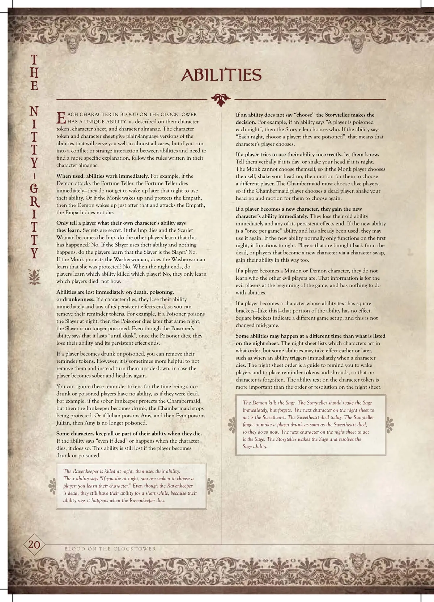
📝 第 22 页 AI 机翻对照（点击展开）
如果一个能力没有说"选择"，则由故事讲述者做出决定。例如，如果一个能力说"每个晚上一名玩家被下毒"，那么故事讲述者选择谁。如果能力说"每个晚上，选择一名玩家：他们被下毒"，这意味着该角色的玩家自己选择。
如果玩家尝试错误地使用他们的能力，请告知他们。如果是白天，口头告知；如果是夜晚，则摇头。僧侣不能选择自己，所以如果僧侣玩家选择了自己，请摇头表示不行，然后示意他们选择另一名玩家。女仆必须选择存活玩家，所以如果女仆玩家选择了一名死亡玩家，请摇头表示不行，并示意他们再次选择。
如果玩家成为新角色，他们立即获得新角色的能力。他们立即失去旧能力及其任何持续效果。如果新能力是"每局游戏一次"的能力且已被使用过，他们可以再次使用它。如果新能力通常只在第一个夜晚生效，那么它今晚会生效。被复活回来的玩家，或通过角色交换成为新角色的玩家，也以这种方式获得他们的能力。
如果玩家成为爪牙或恶魔角色，他们不会知道其他邪恶玩家的身份。该信息是游戏开始时邪恶玩家的专属信息，与能力无关。
如果玩家成为角色能力文本中有方括号的角色——[像这样]——该部分能力无效。方括号表示不同的游戏设置，这不会在游戏中途改变。
有些能力可能在夜晚表上列出的时间之外发生。夜晚表列出了哪些角色按什么顺序行动，但有些能力可能更早或更晚生效，例如当一个角色死亡时能力立即触发的情况。夜晚表的顺序是提醒你唤醒玩家并放置提醒指示物和遮罩的指南，以确保没有角色被遗忘。角色指示物上的能力文本比夜晚表上的解决顺序更重要。
恶魔杀死了贤者。故事讲述者应该立即唤醒贤者，但忘记了。夜晚表上下一个行动的角色是甜心。甜心今天死亡了。故事讲述者忘记在甜心死亡后立即让一名玩家喝醉，所以他们现在这样做。夜晚表上下一个行动的角色是贤者。故事讲述者唤醒贤者并解决贤者的能力。
E
《血染钟楼》中的每个角色都有独特能力，如他们的角色指示物、角色卡和角色年鉴所述。角色指示物和角色卡提供了这些能力的通俗版本。
这些能力在几乎所有情况下都会对你有所帮助，但如果遇到能力之间的冲突或特殊互动，需要寻找更具体的解释，请遵循其角色年鉴中编写的规则。
使用时，能力会立即生效。例如，如果恶魔攻击了预言家，预言家会立即死亡——他们当晚晚些时候无法醒来使用自己的能力。或者，如果僧侣醒来保护了共情者，然后恶魔紧随其后醒来并攻击共情者，共情者不会死亡。
只告诉玩家其自己角色能力说明他们可以了解到的事情。秘密就是秘密。如果小丑死亡，红衣女子成为小丑，其他玩家会知道这件事发生了吗？不会。如果屠夫使用其能力但没有任何事情发生，其他玩家会知道屠夫就是屠夫吗？不会。如果僧侣保护了洗衣女，洗衣女会知道自己被保护了吗？不会。当夜晚结束时，玩家会知道是哪个能力杀死了哪个玩家吗？不会，他们只知道哪些玩家死亡，而不知道死亡原因。
能力在死亡、中毒或醉酒时立即失效。如果一个角色死亡，他们立即失去能力及其任何持续效果，因此你可以移除他们的提醒标记。例如，如果毒药师在夜晚毒死了屠夫，然后毒药师在同一晚晚些时候死亡，屠夫不再被毒害。尽管毒药师的能力说明效果持续"直到黄昏"，但一旦毒药师死亡，他们失去能力及其持续效果也随之结束。
如果一个玩家醉酒或中毒，你可以移除他们的提醒标记。但是，有时不移除而是将它们倒置会更有帮助，以防玩家再次清醒和健康。
你可以暂时忽略这些提醒标记，因为醉酒或中毒的玩家没有能力，就像他们死亡一样。例如，如果清醒的酒馆老板保护了女仆，但随后酒馆老板醉酒，女仆就不再受到保护。或者如果朱利安毒死了艾米，然后埃文毒死了朱利安，那么艾米就不再被毒害。
有些角色在死亡后保留全部或部分能力。如果能力说明"即使死亡"或在角色死亡时发生，则该能力会生效。如果玩家醉酒或中毒，该能力仍然会失效。
乌鸦守护者夜晚被杀，然后使用其能力。其能力说明："如果你在夜晚死亡，你会被唤醒选择一名玩家：你会得知他们的角色。"尽管乌鸦守护者已经死亡，他们仍然暂时拥有其能力，因为其能力说明在乌鸦守护者死亡时会发生。
能力
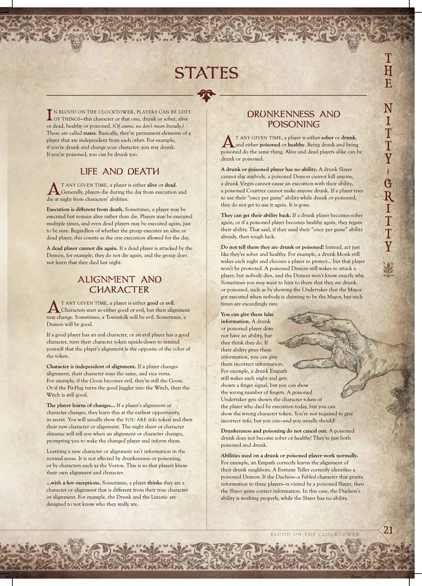
📝 第 23 页 AI 机翻对照（点击展开）
醉酒与中毒
在任何时候，玩家要么清醒要么醉酒，要么中毒要么健康。醉酒和中毒的效果相同。无论生死，玩家都可能醉酒或中毒。
醉酒或中毒的玩家没有能力。醉酒的屠夫无法杀死任何人，中毒的恶魔无法杀死任何人，醉酒的处女无法通过其能力导致处决，中毒的朝臣无法让任何人醉酒。如果玩家在醉酒或中毒状态下尝试使用其"每局一次"的能力，他们将无法再次使用它。该能力消失了。
他们可以恢复能力。如果醉酒的玩家再次清醒，或者中毒的玩家再次恢复健康，他们会重新获得能力。也就是说，如果他们已经使用了"每局一次"的能力，那只能算他们运气不好。
不要告诉他们他们醉酒或中毒了！相反，表现得就像他们清醒且健康一样。例如，醉酒的僧侣每晚仍然会醒来并选择一个玩家进行保护……但那个玩家实际上不会被保护。中毒的恶魔仍然会醒来攻击一个玩家，但没有人死亡，而且恶魔不会确切知道原因。
有时你可能想暗示他们醉酒或中毒，例如在无人自称是市长的情况下向掘墓人展示市长被处决了，但这种情况极为罕见。
你可以给他们错误的信息。醉酒或中毒的玩家没有能力，但他们认为自己有。如果他们的能力能提供信息，你可以给他们错误的信息。例如，醉酒的共情者每晚仍然会醒来并看到一个手指信号，但你可以展示错误的手指数量。中毒的掘墓人会看到今天被处决的玩家的角色标记，但你可以展示错误的角色标记。你没有必须提供错误信息的义务，但你可以——而且通常应该这样做！
醉酒和中毒不会相互抵消。中毒的醉酒者不会变得清醒或健康！他们只是同时处于中毒和醉酒状态。
对醉酒或中毒玩家使用的能力正常工作。例如，共情者能正确了解其醉酒邻居的阵营。预言家能正确识别出中毒的恶魔。如果公爵——一个向三位玩家提供信息的传奇角色——被中毒的屠夫拜访，那么屠夫会获得正确的信息。在这种情况下，公爵的能力正常工作，而屠夫没有能力。
在《钟楼血案》中，玩家可以是很多东西——这个角色或那个角色，清醒或醉酒，活着或死亡，健康或中毒。（当然，我们不是字面意思。）这些被称为状态。基本上，它们是玩家相互独立的永久元素。例如，
如果你喝醉了并更换了角色，你仍然保持喝醉状态。
如果你被下毒了，你也可以同时喝醉。
生与死
在任何时候，玩家要么存活，要么死亡。
通常，玩家在白天因处决而死亡，在夜晚因角色能力而死亡。
处决与死亡不同。有时，玩家可能被处决但不会死亡。玩家可能被多次处决，甚至已死亡的玩家也可能再次被处决，只是为了确定。无论群体处决的是存活玩家还是死亡玩家，这都算作当天允许的一次处决。
死亡玩家不能再次死亡。例如，如果死亡玩家被恶魔攻击，他们不会再次死亡，群体也不会得知他们昨晚已经死亡。
阵营与角色
在任何时候，玩家要么是善良阵营，要么是邪恶阵营。
角色开始时属于善良或邪恶阵营，但他们的阵营可能会改变。有时，镇民会是邪恶的。有时，恶魔会是善良的。
如果善良玩家拥有邪恶角色，或邪恶玩家拥有善良角色，将他们的角色指示物翻转过来，提醒自己玩家的阵营与指示物颜色相反。
角色独立于阵营。如果玩家改变阵营，他们的角色保持不变，反之亦然。
例如，如果暴徒变成邪恶阵营，他们仍然是暴徒。或者如果坑女巫将善良的杂耍者变成女巫，那么女巫仍然是善良的。
玩家会得知变化...如果玩家的阵营或角色发生变化，他们会在最早的机会私下得知这一点。你通常会展示"你是"信息指示物，然后是他们新的角色或阵营。夜表或角色年鉴会告诉你何时发生阵营或角色变化，提示你唤醒被改变的玩家并告知他们。
学习新角色或阵营不是正常意义上的信息。它不受醉酒或中毒的影响，也不受如沃托克斯等角色的影响。这样玩家才能知道自己的阵营和角色。
...但有少数例外。有时，玩家认为自己拥有与真实角色或阵营不同的角色或阵营。例如，醉汉和疯子被设计为不知道他们真实的身份。
T
H
E
N
I
T
T
Y
G
R
I
T
T
Y
状态
-
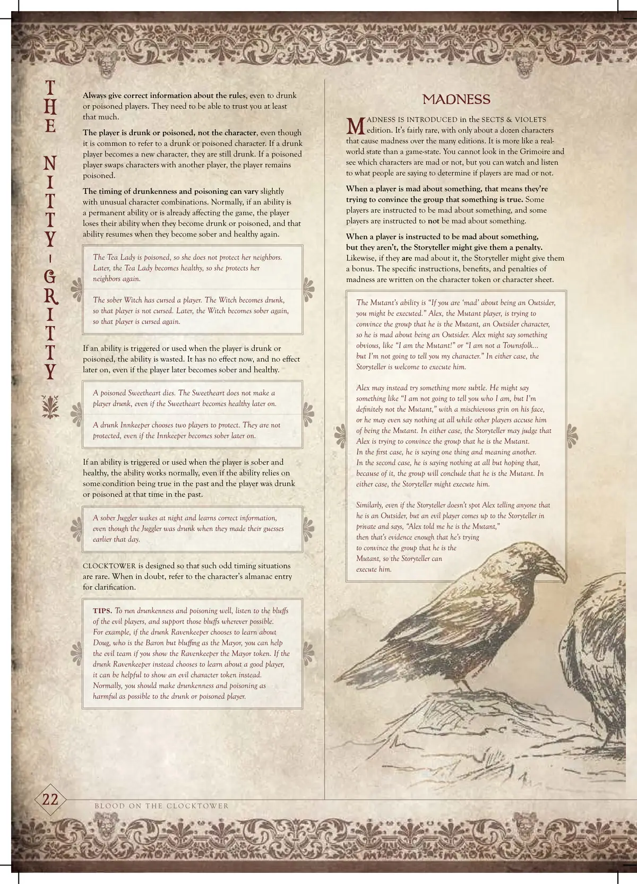
📝 第 24 页 AI 机翻对照（点击展开）
疯癫
疯癫在"教派与紫罗兰"（SECTS & VIOLETS）版本中引入。它相当罕见，在多个版本中只有大约十几个角色会导致疯癫。它更像是一种真实世界状态而非游戏状态。你不能查阅《魔典》（Grimoire）查看哪些角色是疯癫的，但你可以通过观察和倾听人们的言论来判断玩家是否疯癫。
当玩家对某事疯癫时，意味着他们试图说服群体某件事是真的。一些玩家被指示对某事疯癫，而一些玩家被指示不对某事疯癫。
当玩家被指示对某事疯癫，但他们没有这样做时，故事讲述者（Storyteller）可能会给他们一个惩罚。同样，如果他们对这件事疯癫，故事讲述者可能会给他们一个奖励。疯癫的具体指示、好处和惩罚写在角色指示物（character token）或角色卡（character sheet）上。
变异者（Mutant）的能力是："如果你对'身为局外人'（Outsider）这件事疯癫，你可能会被处决。"亚历克斯（Alex），作为变异者玩家，试图说服群体他是变异者，一个局外人角色，因此他对身为局外人这件事疯癫。亚历克斯可能会说些明显的话，比如"我是变异者！"或"我不是镇民……但我不打算告诉你们我的角色。"无论哪种情况，故事讲述者都可以处决他。
亚历克斯可能会尝试更微妙的方式。他可能会说些类似"我不会告诉你们我是谁，但我肯定不是变异者"的话，脸上带着顽皮的微笑，或者当其他玩家指控他是变异者时，他甚至可能一言不发。无论哪种情况，故事讲述者可能会判断亚历克斯试图说服群体他是变异者。在第一种情况下，他言在此而意在彼。在第二种情况下，他什么都没说，但希望因此群体会得出他是变异者的结论。无论哪种情况，故事讲述者都可以处决他。
同样，即使故事讲述者没有发现亚历克斯告诉任何人他是局外人，但一个邪恶玩家私下走到故事讲述者面前说，"亚历克斯告诉我他是变异者"，这就足以证明他试图说服群体他是变异者，因此故事讲述者可以处决他。
始终提供正确的规则信息，即使是对醉酒或中毒的玩家。他们至少需要能够信任你这一点。
玩家是醉酒或中毒，而不是角色，尽管通常我们会说醉酒或中毒的角色。如果一个醉酒玩家成为新角色，他们仍然是醉酒的。如果一个中毒玩家与其他玩家交换角色，该玩家仍然中毒。
醉酒和中毒的时间可能会有轻微变化。
不寻常的角色组合。通常，如果一个能力是永久能力或已经在影响游戏，当玩家变得醉酒或中毒时，他们会失去自己的能力，而当他们再次变得清醒和健康时，该能力会恢复。
茶女士中毒了，所以她不保护她的邻居。后来，茶女士变得健康了，所以她再次保护她的邻居。
清醒的女巫诅咒了一名玩家。女巫变得醉酒，所以该玩家没有被诅咒。后来，女巫再次变得清醒，所以该玩家再次被诅咒。
如果一个能力在玩家醉酒或中毒时被触发或使用，该能力会被浪费。它现在没有效果，以后也没有效果，即使玩家后来变得清醒和健康。
一个中毒的甜心死亡了。甜心不会让玩家醉酒，即使甜心后来变得健康。
一个醉酒的客栈老板选择两名玩家进行保护。他们没有被保护，即使客栈老板后来变得清醒。
如果一个能力在玩家清醒和健康时被触发或使用，该能力会正常工作，即使该能力依赖于过去某个条件为真，而玩家在过去那个时刻是醉酒或中毒的。
一个清醒的杂耍者在夜晚醒来并获得了正确的信息，尽管杂耍者在当天早些时候做猜测时是醉酒的。
钟塔的设计使得这类奇怪的时机情况很少见。如有疑问，请参考角色的年鉴条目以获得澄清。
提示。要很好地处理醉酒和中毒，要听取邪恶玩家的虚张声势，并在尽可能的情况下支持这些虚张声势。例如，如果醉酒的渡鸦守护者选择了解道格，道格是男爵但虚充市长，你可以向渡鸦守护者展示市长标记来帮助邪恶团队。如果醉酒的渡鸦守护者选择了解一名善良玩家，展示一个邪恶角色标记可能会有帮助。
通常，你应该让醉酒和中毒对醉酒或中毒的玩家尽可能有害。
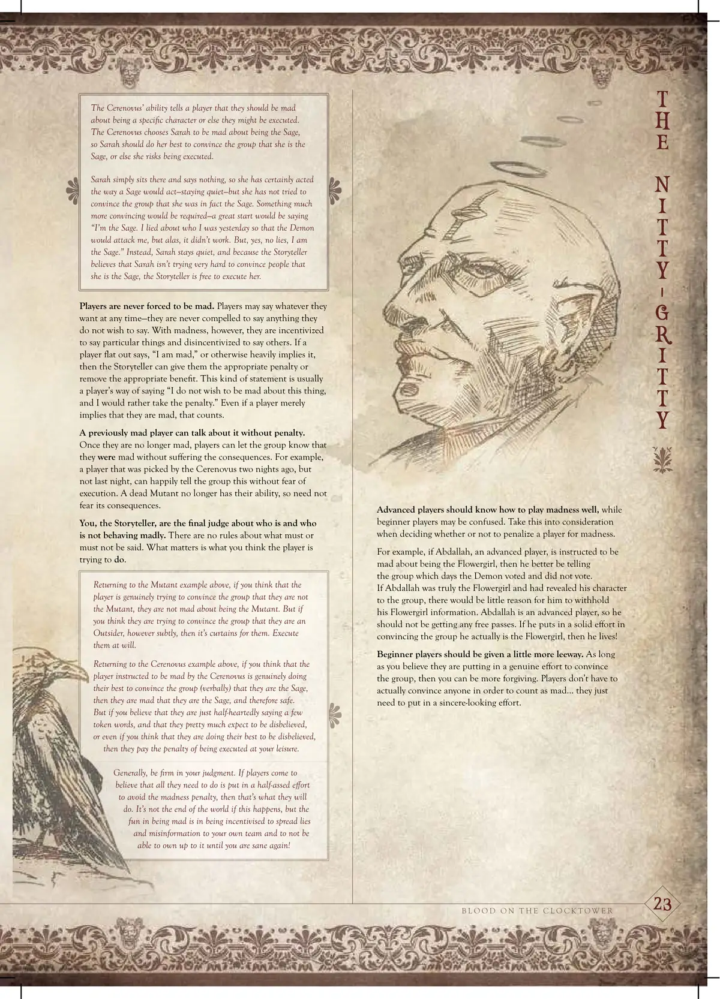
📝 第 25 页 AI 机翻对照（点击展开）
高级玩家应该知道如何很好地扮演疯狂，而初级玩家可能会感到困惑。在决定是否因疯狂而惩罚玩家时，请考虑到这一点。
例如，如果阿卜杜拉（Abdallah），一位高级玩家，被指示要为成为花女（Flowergirl）而疯狂，那么他最好告诉团体恶魔在哪几天投票了，哪几天没有投票。
如果阿卜杜拉真的是花女并且已经向团体揭示了他的角色，那么他几乎没有理由隐瞒他的花女信息。阿卜杜拉是高级玩家，所以他不应该获得任何豁免。如果他努力说服团体他实际上是花女，那么他就活下来了！
初级玩家应该得到更多的宽容。只要你相信他们正在付出真诚的努力去说服团体，那么你可以更宽容一些。玩家不必真正说服任何人才能算作疯狂...他们只需要做出看起来真诚的努力。
Cerenovus的能力告诉玩家，他们应该为成为特定角色而疯狂，否则他们可能会被处决。Cerenovus选择Sarah为成为贤者（Sage）而疯狂，所以Sarah应该尽力说服团体她是贤者，否则她有被处决的风险。
Sarah只是坐在那里一言不发，所以她确实表现得像贤者会表现的那样——保持安静——但她没有尝试说服团体她实际上是贤者。需要更有说服力的表现——一个很好的开始是说"我是贤者。我昨天撒谎关于我的身份，这样恶魔会攻击我，但唉，没有成功。但是，是的，没有谎言，我是贤者。"相反，Sarah保持安静，并且因为故事讲述者相信Sarah没有努力尝试说服人们她是贤者，故事讲述者可以自由地处决她。
玩家永远不会被迫疯狂。玩家可以在任何时候说他们想说的任何话——他们永远不会被迫说他们不想说的话。然而，对于疯狂，他们被鼓励说特定的话，而被 discouraged 说其他的话。如果玩家直接说"我疯了"，或以其他方式强烈暗示这一点，那么故事讲述者可以给他们适当的惩罚或移除适当的好处。这种陈述通常是玩家表示"我不想为这件事而疯狂，我宁愿接受惩罚"的方式。即使玩家只是暗示他们疯了，也算数。
之前疯狂的玩家可以谈论它而不受惩罚。一旦他们不再疯狂，玩家可以让团体知道他们曾经疯狂而不会遭受后果。例如，一个玩家在两天前被Cerenovus选中，但
不是昨晚，可以高兴地告诉小组而不用担心被处决。一个死亡的变异者不再拥有他们的能力，因此不必担心其后果。
你，故事讲述者，是关于谁谁没有疯狂行为的最终裁判。没有关于必须说什么或不能说什么的规则。重要的是你认为玩家试图做什么。
回到上面的变异者例子，如果你认为玩家真的试图说服小组他们不是变异者，那么他们对于自己是变异者这件事并不疯狂。但如果你认为他们试图说服小组他们是局外人，无论多么微妙，那么他们的末日就到了。随意处决他们。
回到上面的塞雷诺夫斯例子，如果你认为被塞雷诺夫斯指示要疯狂的玩家真的尽力说服小组（口头）他们是贤者，那么他们对于自己是贤者这件事是疯狂的，因此是安全的。但如果你认为他们只是半心半意地说几句客套话，并且他们基本上期望不被相信，或者即使你认为他们尽力不被相信，那么他们会付出被你随意处决的代价。
通常，在你的判断上要坚定。如果玩家开始相信他们只需要付出半心半意的努力就能避免疯狂惩罚，那么他们就会这样做。如果发生这种情况，世界末日也不会到来，但疯狂中的乐趣在于被激励向自己的团队传播谎言和错误信息，并且在再次恢复理智之前无法承认！
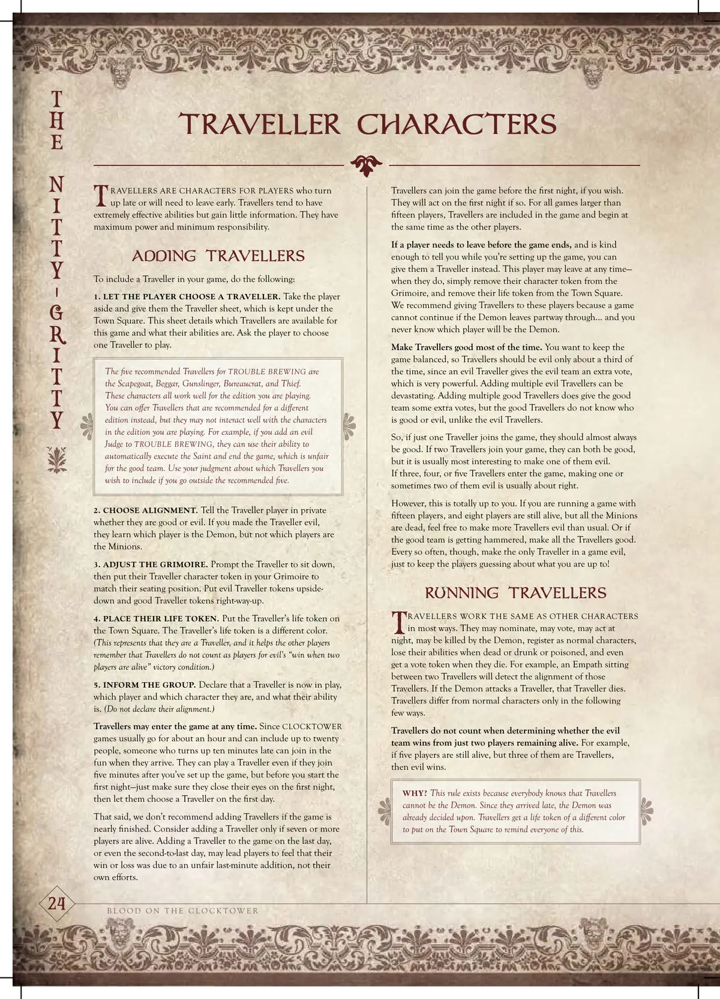
📝 第 26 页 AI 机翻对照（点击展开）
旅行者可以在第一夜前加入游戏，如果你愿意的话。
如果他们加入，他们将在第一夜行动。对于所有超过十五名玩家的游戏，旅行者会被包含在游戏中，与其他玩家同时开始。
如果玩家需要在游戏结束前离开，并且在你设置游戏时好心告诉你，你可以给他们一个旅行者。这个玩家可以随时离开——当他们离开时，只需从咒语书中移除他们的角色指示物，并从城镇广场移除他们的生命指示物。
我们建议给这些玩家旅行者，因为如果恶魔中途离开，游戏无法继续……而且你永远不知道哪个玩家会是恶魔。
大多数时候让旅行者成为好人。你想保持游戏平衡，所以旅行者应该只有大约三分之一的时间是邪恶的，因为一个邪恶的旅行者会给邪恶团队一个额外的投票权，这非常强大。添加多个邪恶的旅行者可能是毁灭性的。添加多个善良的旅行者确实会给善良团队一些额外的投票权，但善良的旅行者不知道谁是好人或坏人，这与邪恶的旅行者不同。
因此，如果只有一个旅行者加入游戏，他们几乎总是应该成为好人。如果两个旅行者加入你的游戏，他们都可以是好人，但通常让其中一个成为邪恶的会更有趣。如果有三、四或五个旅行者进入游戏，通常让其中一两个成为邪恶的是合适的。
然而，这完全取决于你。如果你正在运行一个有十五名玩家的游戏，还有八名玩家仍然活着，但所有爪牙都死了，你可以比平时让更多的旅行者成为邪恶的。或者如果善良团队正在遭受重创，让所有旅行者成为好人。
不过，偶尔让游戏中唯一的旅行者成为邪恶的，只是为了让玩家猜测你打算做什么！
运行旅行者
旅行者在大多数方面与其他角色工作方式相同
他们可以提名，可以投票，可以在夜晚行动，可以被恶魔杀死，正常注册为角色，在死亡或醉酒或中毒时失去能力，甚至在死亡时获得投票指示物。例如，一个共情者坐在两个旅行者之间，会检测到那些旅行者的阵营。如果恶魔攻击一个旅行者，那个旅行者就会死亡。
旅行者与普通角色仅在以下几方面有所不同。
在确定邪恶团队是否仅因两名玩家仍然存活而获胜时，旅行者不计入。例如，如果五名玩家仍然活着，但其中三个是旅行者，那么邪恶团队获胜。
为什么？这个规则存在是因为每个人都知道旅行者不可能是恶魔。因为他们到达较晚，恶魔已经被确定。旅行者获得不同颜色的生命指示物
放在城镇广场上提醒大家这一点。
T
RAVELLERS 是为那些迟到或需要提前离开的玩家准备的角色。旅行者往往拥有极其强大的能力，但获得的信息很少。他们拥有最大权力和最小责任。
添加旅行者
要在游戏中包含一名旅行者，请执行以下操作：
- 让玩家选择一名旅行者。把玩家叫到一旁，给他们旅行者卡，这张卡保存在城镇广场下方。这张卡列出了本次游戏中可用的旅行者及其能力。请玩家选择一名旅行者进行游戏。
《TROUBLE BREWING》推荐的五名旅行者是替罪羊、乞丐、枪手、官僚和小偷。这些角色都很适合您正在玩的版本。您也可以提供其他版本推荐的旅行者，但他们可能与您正在玩的版本中的角色互动不佳。例如，如果您在《TROUBLE BREWING》中添加一名邪恶的法官，他们可以使用自己的能力自动处决圣徒并结束游戏，这对好人队不公平。如果您要添加超出推荐五名之外的旅行者，请自行判断您希望包含哪些。
- 选择阵营。私下告诉旅行者玩家他们是好人还是坏人。如果您将旅行者设为邪恶阵营，他们会知道哪名玩家是恶魔，但不知道哪些玩家是爪牙。
- 调整法典。请旅行者玩家坐下，然后将他们的旅行者角色指示物放入您的法典中，对应他们的座位位置。邪恶旅行者指示物倒置放置，善良旅行者指示物正放。
- 放置他们的生命指示物。将旅行者的生命指示物放在城镇广场上。旅行者的生命指示物是不同的颜色。（这表示他们是旅行者，并且有助于其他玩家记住旅行者不计入邪恶阵营"当两名玩家存活时获胜"的胜利条件。）
- 通知全体玩家。宣布现在有一名旅行者加入游戏，是哪名玩家扮演哪个角色，以及他们的能力是什么。（不要宣布他们的阵营。）
旅行者可以在任何时候加入游戏。由于 CLOCKTOWER 游戏通常持续约一小时，最多可容纳二十人，因此迟到十分钟的人可以在到达后加入游戏乐趣。即使他们在游戏开始后五分钟加入，但在第一个夜晚开始前，他们也可以扮演一名旅行者—只需确保他们在第一个夜晚闭上眼睛，然后在第一天让他们选择一名旅行者。
也就是说，我们不建议在游戏接近结束时添加旅行者。只有在七名或更多玩家存活时才考虑添加一名旅行者。在最后一天添加旅行者到游戏中，
甚至在倒数第二天，也可能让玩家觉得他们的输赢是由于不公平的最后一刻添加，而不是他们自己的努力。
TRAVELLER 角色
-
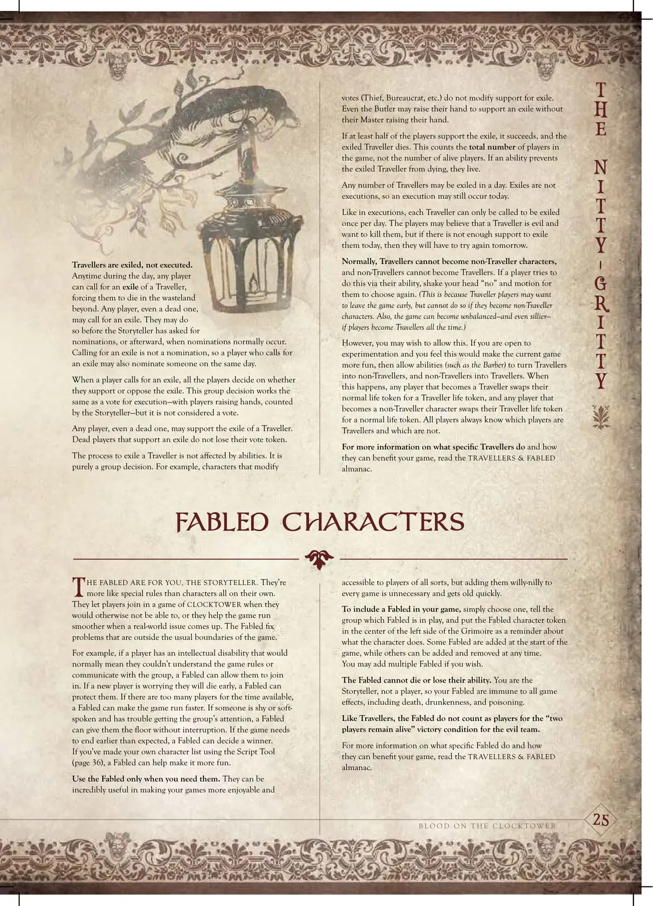
📝 第 27 页 AI 机翻对照（点击展开）
投票（如小偷、官僚等）不会改变对放逐的支持。
即使管家也可以举手支持放逐，而无需其主人举手。
如果至少一半的玩家支持放逐，则放逐成功，被放逐的旅行者死亡。这计算的是游戏中的玩家总数，而非存活玩家数。如果有能力阻止被放逐的旅行者死亡，则他们会存活。
一天内可以放逐任意数量的旅行者。放逐不是处决，因此今天仍可能发生处决。
与处决一样，每个旅行者每天只能被叫出一次进行放逐。玩家可能认为某个旅行者是邪恶的并想杀死他们，但如果今天没有足够支持来放逐他们，那么他们将不得不明天再试一次。
通常情况下，旅行者不能变成非旅行者角色，非旅行者也不能变成旅行者。如果玩家尝试通过其能力这样做，请摇头"不"并示意他们重新选择。（这是因为旅行者玩家可能想提前离开游戏，但如果他们变成非旅行者角色就无法离开。此外，如果玩家频繁变成旅行者，游戏可能会变得不平衡——甚至更荒谬。）
然而，你可能希望允许这样做。如果你愿意尝试并认为这会让当前游戏更有趣，那么允许能力（如理发师）将旅行者变成非旅行者，将非旅行者变成旅行者。当这种情况发生时，任何变成旅行者的玩家将其普通生命指示物换成旅行者生命指示物，任何变成非旅行者角色的玩家将其旅行者生命指示物换成普通生命指示物。所有玩家始终知道哪些玩家是旅行者，哪些不是。
关于特定旅行者的作用以及他们如何使你的游戏受益的更多信息，请阅读《旅行者与传说年鉴》。
旅行者是被放逐，而非被处决。
白天任何时候，任何玩家都可以要求放逐一名旅行者，
迫使他们死于远方的荒野。
任何玩家，即使是已死亡的玩家，
也可以要求放逐。他们可以在
主持人要求提名之前或之后（通常提名发生时）这样做。
要求放逐不是提名，因此要求放逐的玩家在同一天也可以提名某人。
当玩家要求放逐时，所有玩家决定他们支持还是反对放逐。这个群体决策与处决投票的方式相同——玩家举手，由主持人计数——但这不被视为投票。
任何玩家，即使是已死亡的玩家，也可以支持放逐一名旅行者。
支持放逐的已死亡玩家不会失去其投票指示物。
放逐旅行者的过程不受能力影响。它
纯粹是一个群体决定。例如，那些修改
传奇是为你们，故事讲述者准备的。它们与其说是角色，不如说是特殊规则。它们让玩家原本无法参与钟塔游戏时能够加入，或者在现实问题出现时帮助游戏更顺畅地进行。传奇解决的是游戏常规边界之外的问题。例如，如果玩家有智力障碍，通常意味着他们无法理解游戏规则或与群体交流，传奇可以让他们参与进来。如果新玩家担心自己会过早死亡，传奇可以保护他们。如果时间有限但玩家太多，传奇可以让游戏进行得更快。如果有人害羞或说话轻柔，难以获得群体关注，传奇可以让他们不受打扰地发言。如果游戏需要比预期更早结束，传奇可以决定胜者。如果你使用脚本工具（第36页）创建了自己的角色列表，传奇可以帮助使其更有趣。
只在需要时使用传奇。它们可以极大地提高游戏的趣味性和对不同类型玩家的可及性，但随意将传奇添加到每局游戏中是不必要的，而且很快会变得乏味。
要在游戏中包含传奇，只需选择一个，告诉群体哪个传奇正在使用，并将传奇角色指示物放在格里莫尔左侧中央，作为角色功能的提醒。有些传奇在游戏开始时添加，而其他传奇可以在任何时候添加和移除。如果你愿意，可以添加多个传奇。
传奇不会死亡或失去能力。你是故事讲述者，而不是玩家，因此你的传奇对所有游戏效果免疫，包括死亡、醉酒和中毒。与旅行者一样，传奇不计入邪恶团队"两名玩家存活"的胜利条件。
关于特定传奇的作用以及它们如何为你的游戏带来好处，更多信息请参阅《旅行者与传奇年鉴》。
传奇角色
-
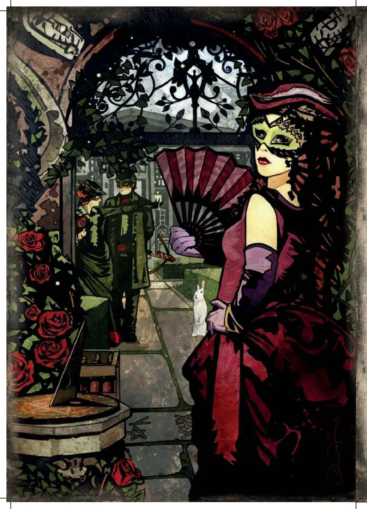
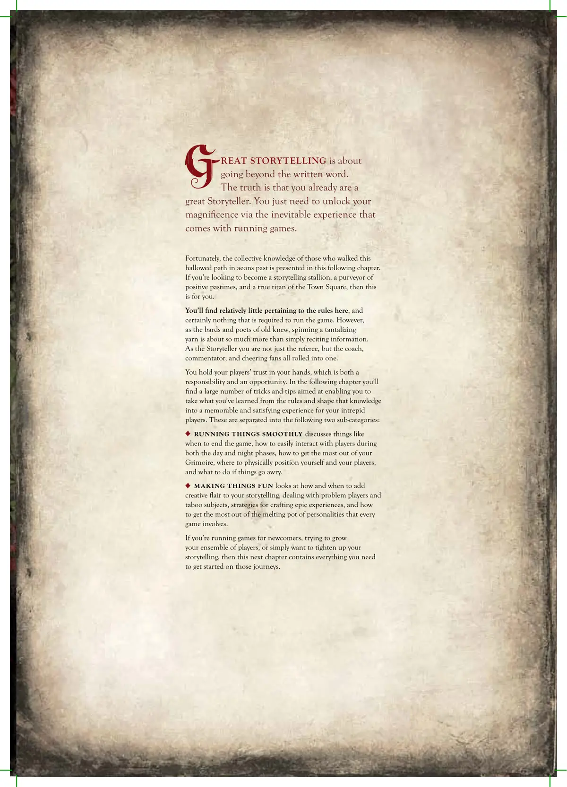
📝 第 29 页 AI 机翻对照（点击展开）
幸运的是，那些在远古时代走过这条神圣道路的人们的集体智慧，将在接下来的章节中呈现。
如果你想成为一名讲故事的高手，一个积极娱乐的传播者，以及真正的广场巨人，那么这就是为你准备的。
在这里你会发现与规则相关的内容相对较少，当然也没有任何运行游戏所必需的内容。然而，正如古代的吟游诗人和诗人所知道的，编织一个引人入胜的故事远不仅仅是复述信息。
作为故事讲述者，你不仅仅是裁判，更是教练、评论员和欢呼的粉丝的结合体。
你掌握着玩家们的信任，这既是一种责任，也是一个机会。在接下来的章节中，你会发现大量技巧和提示，旨在帮助你将你从规则中学到的知识，塑造成一段为你的勇敢玩家们难忘而满意的体验。这些内容分为以下两个子类别：
顺畅运行游戏 讨论了诸如何时结束游戏、如何在白天和黑夜阶段轻松与玩家互动、如何充分利用你的魔法书、如何物理上定位你自己和你的玩家，以及如果出现问题时该怎么办。
让游戏更有趣 探讨了如何以及何时为你的故事讲述增添创意色彩，处理问题玩家和禁忌话题，创造史诗般体验的策略，以及如何充分利用每场游戏所涉及的各种性格的熔炉。
如果你正在为新手组织游戏，试图扩大你的玩家阵容，或者只是想提升你的故事讲述技巧，那么下一章包含了你开始这些旅程所需的一切。
伟大的故事讲述
超越文字本身。
事实是，你已经是
一位伟大的故事讲述者。你只需要通过
组织游戏所必然带来的经验，来释放
你的卓越才能。
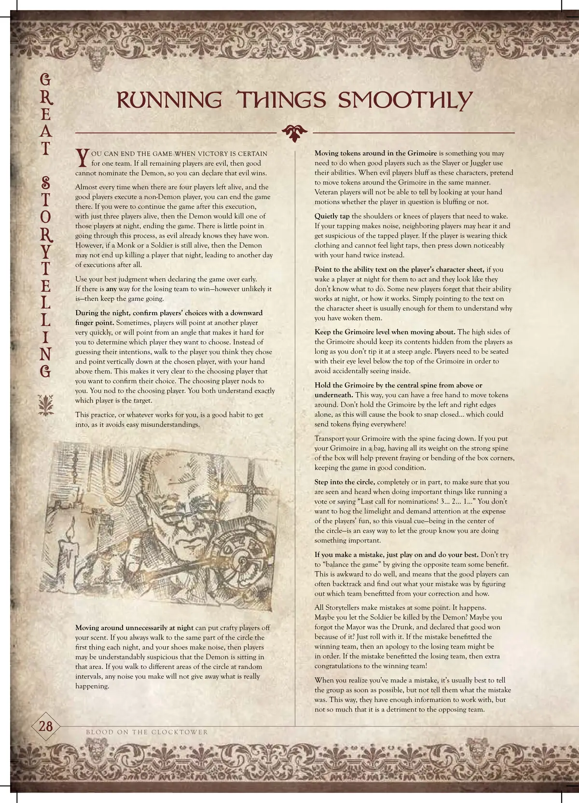
📝 第 30 页 AI 机翻对照（点击展开）
在魔法书中移动指示物是当你需要处理像屠夫或杂耍者这样的好玩家使用他们的能力时可能需要做的事情。当邪恶玩家扮演这些角色时，假装以同样的方式在魔法书中移动指示物。资深玩家将无法通过观察你的手部动作来判断相关玩家是否在虚张声势。
轻轻拍打需要唤醒的玩家的肩膀或膝盖。如果你的拍打发出声音，相邻的玩家可能会听到它，并对被拍打的玩家产生怀疑。如果玩家穿着厚实的衣物无法感受到轻拍，那么改用明显按压两次的方式。
如果你在夜间唤醒玩家让他们行动，而他们看起来不知道该做什么，就指向玩家角色卡上的能力文本。一些新玩家会忘记他们的能力在夜间有效，或者不知道如何使用。简单地指向角色卡上的文本通常就足以让他们理解你为什么唤醒他们。
移动时保持魔法书水平。魔法书的高边应该能将其内容隐藏在玩家视线之外，只要你不要以陡峭的角度倾斜它。玩家需要坐得使他们的视线低于魔法书的顶部，以避免意外看到内部。
从上方或下方抓住魔法书的中央书脊。这样，你可以空出一只手来移动指示物。不要单独抓住魔法书的左右边缘，因为这会导致书本突然合上...这可能会让指示物到处飞溅！
运输你的魔法书时，让书脊朝下。如果你把魔法书放进袋子里，让所有重量都集中在盒子的坚固书脊上，这将有助于防止盒子角落的磨损或弯曲，保持游戏的良好状态。
走进圆圈内，完全或部分进入，以确保在执行重要事情（如进行投票或说"提名最后机会！3... 2... 1..."）时能被看到和听到。你不想抢占风头并以牺牲玩家的乐趣为代价来要求关注，所以这个视觉提示——站在圆圈中央——是让群体知道你在做重要事情的一种简单方式。
如果你犯了错误，就继续游戏并尽力而为。不要试图通过给对方团队一些好处来"平衡游戏"。这样做很难做得好，而且意味着好玩家通常可以回溯并找出你的错误，方法是确定哪个团队从你的纠正中受益以及如何受益。
所有故事讲述者都会在某个时候犯错。这是会发生的。也许你让士兵被恶魔杀死了？也许你忘了市长是醉鬼，并因此宣布好人获胜？就顺其自然吧。如果这个错误对
当胜利确定时你可以结束游戏
当一方获胜时，那么向失败方道歉可能是
合适的。如果这个错误对失败方有利，那么要向获胜方表示额外的
祝贺！
当你意识到自己犯了错误，通常最好尽快
告诉小组，但不要告诉他们错误是什么。这样，他们有足够的信息来处理，但
不会多到对对手造成不利。
伟大的故事讲述
当只剩下四名玩家存活时，而且善良玩家处决了一名非恶魔玩家，你几乎可以在那里
结束游戏。如果在这场处决后继续游戏，
只剩下三名玩家存活，那么恶魔会在当晚杀死其中一名玩家，从而结束游戏。进行这个过程
没有意义，因为邪恶方已经知道他们赢了。
然而，如果修士或士兵仍然存活，那么恶魔
可能不会在当晚杀死玩家，最终导致另一轮
处决。
在提前宣布游戏结束时，请运用你的最佳判断。
如果失败方还有任何获胜的可能——无论多么不可能——
那么就让游戏继续进行。
在夜间，用向下的手指动作确认玩家的选择。有时，玩家会非常快速地指向另一名玩家，
或者从一个难以判断他们想选择哪个玩家的角度指向。与其猜测他们的意图，
不如走向你认为他们选择的玩家，并垂直向下指向被选中的玩家，你的手在他们上方。这让选择玩家非常清楚你想要
确认他们的选择。选择玩家向你点头。你向选择玩家点头。你们都完全明白
哪个玩家是目标。
养成这种做法，或者任何对你有效的方法，是一个好习惯，因为它可以避免
容易产生的误解。
夜间不必要的走动可能会让狡猾的玩家摆脱你的追踪。如果你每晚第一件事总是走向圆圈的同一个区域，
而且你的鞋子会发出声音，那么玩家可能会合理地怀疑恶魔就坐在那个区域。如果你在不同时间随机走向圆圈的不同区域，
你发出的任何声音都不会泄露真正发生的事情。
让事情顺利进行
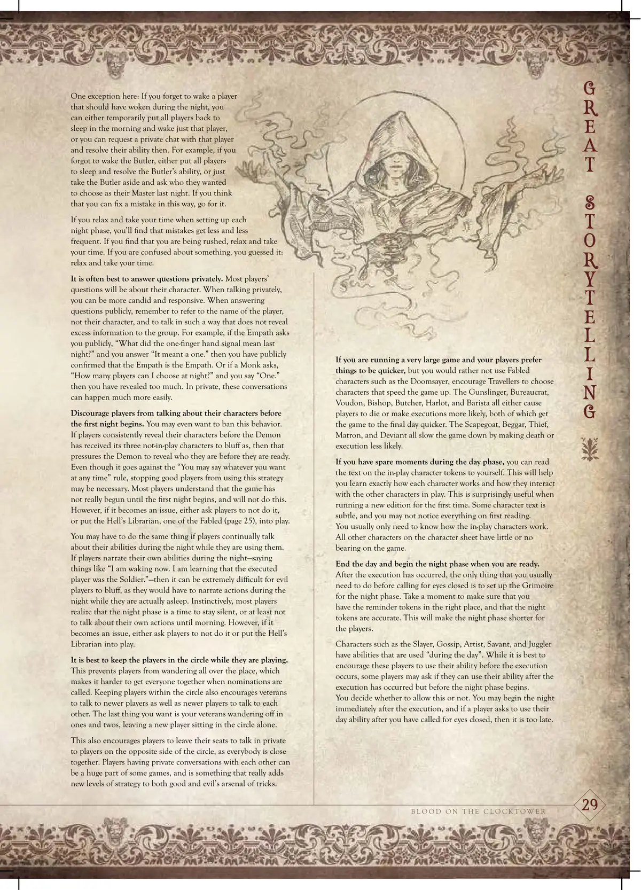
📝 第 31 页 AI 机翻对照（点击展开）
如果你正在运行一场大型游戏，而你的玩家希望游戏进行得更快，但你又不想使用像末日预言者这样的传奇角色，可以鼓励旅行者选择能够加快游戏节奏的角色。枪手、官僚、巫毒师、主教、屠夫、娼妓和咖啡师都会导致玩家死亡或使处决更可能发生，这两种情况都能让游戏更快进入最后一天。替罪羊、乞丐、小偷、主妇和变态者都会通过降低死亡或处决的可能性来减慢游戏节奏。
如果你在白天阶段有空闲时间，可以自己阅读场上角色指示物上的文字。这将帮助你准确了解每个角色的运作方式以及它们如何与场上其他角色互动。当你第一次运行新版本时，这会出人意料地有用。一些角色文本很微妙，你可能不会在第一次阅读时注意到所有内容。
你通常只需要了解场上角色的运作方式。角色卡上的所有其他角色对游戏几乎没有影响或没有影响。
当你准备好时，结束白天并开始夜晚阶段。处决发生后，在要求玩家闭眼之前，你通常唯一需要做的事情就是为夜晚阶段设置魔法书。花一点时间确保提醒指示物放在正确的位置，并且夜晚指示物是准确的。这将使夜晚阶段对玩家来说更短。
像屠魔者、八卦者、艺术家、博学者和杂耍者这样的角色拥有"在白天使用"的能力。虽然最好鼓励这些玩家在处决发生前使用他们的能力，但有些玩家可能会询问他们是否可以在处决发生后但在夜晚阶段开始前使用他们的能力。
你决定是否允许这样做。你可以在处决后立即开始夜晚，如果你已经要求玩家闭眼后，有玩家询问是否可以使用他们的白天能力，那就为时已晚了。
这里有一个例外：如果你忘记在夜晚期间唤醒应该被唤醒的玩家，你可以在早上暂时让所有玩家重新入睡，然后只唤醒那个玩家，或者你可以要求与该玩家进行私人聊天，然后解决他们的能力。例如，如果你忘记唤醒管家，要么让所有玩家重新入睡并解决管家的能力，要么把管家叫到一旁，询问他们昨晚想选择谁作为他们的主人。如果你认为你可以用这种方式纠正错误，那就去做吧。
如果你在设置每个夜晚阶段时放松并花时间，你会发现错误会越来越少。如果你发现自己被催促，就放松并花时间。如果你对某些事情感到困惑，你猜对了：放松并花时间。
最好私下回答问题。大多数玩家的问题会关于他们的角色。私下交谈时，你可以更加坦率和直接。公开回答问题时，记得提及玩家的名字，而不是他们的角色，并且以一种不会向群体透露过多信息的方式交谈。例如，如果共情者公开问你，"昨晚那个单手指信号是什么意思？"而你回答"它代表数字一"，那么你就公开确认了共情者的身份。或者如果一位僧侣问，"晚上我可以选择多少位玩家？"而你说"一位"，那么你就透露了太多信息。私下里，这些对话可以更容易地进行。
在第一个夜晚开始前，劝阻玩家不要讨论他们的角色。你甚至可能想要禁止这种行为。如果玩家在恶魔获得其三个未出场角色用于欺骗之前就持续透露他们的角色，那就会迫使恶魔在准备好之前就暴露自己的身份。尽管这违背了"你可以在任何时候说任何你想说的话"的规则，但阻止优秀玩家使用这种策略可能是必要的。大多数玩家明白游戏在第一个夜晚开始前尚未真正开始，不会这样做。然而，如果这成为一个问题，要么请玩家不要这样做，要么将地狱图书管理员（Fabled之一，第25页）加入游戏中。
如果玩家在夜晚使用能力时持续讨论他们的能力，你可能需要做同样的事情。如果玩家在夜晚叙述自己的能力——比如说"我现在醒了。我得知被处决的玩家是士兵。"——那么邪恶玩家将极难进行欺骗，因为他们实际上在睡觉时却必须叙述夜晚的行动。大多数玩家本能地意识到夜晚阶段是保持沉默的时间，或者至少在早晨到来前不要谈论自己的行动。然而，如果这成为一个问题，要么请玩家不要这样做，要么将地狱图书管理员加入游戏中。
玩家游戏时最好让他们围成一圈。这可以防止玩家四处走动，这使得在提名时将所有人聚集在一起变得更加困难。让玩家保持在圈内也鼓励老玩家与新玩家交谈，以及新玩家之间相互交谈。你最不希望看到的是老玩家三三两两地走开，留下新玩家独自坐在圈中。这也鼓励玩家离开座位，与圈对面的玩家进行私下交谈，因为每个人都靠得很近。玩家之间进行私人对话时
成为某些游戏的重要组成部分，并且确实为善恶双方的诡计库增添了新的策略层次。
伟大的故事讲述
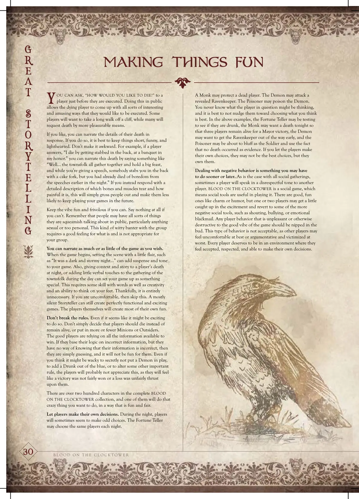
📝 第 32 页 AI 机翻对照（点击展开）
故事讲述
僧侣可以保护已死亡的玩家。恶魔可以攻击已揭示的守乌鸦者。投毒者可以向恶魔下毒。你永远不知道相关玩家在想什么，最好不要引导他们选择你认为最好的选项。在上述例子中，预言家可能是在测试他们是否喝醉了，僧侣可能希望今晚有人死亡，这样剩下三名玩家就可以获得市长胜利，恶魔可能想早点除掉守乌鸦者，而投毒者可能即将扮演士兵进行虚张声势，并以没有发生死亡作为证据。如果你让玩家自己做决定，这些决定可能不是最好的，但他们需要为自己的决定负责。
处理不良行为是你迟早可能要做的事情。与所有社交聚会一样，有时玩家会用不尊重的语气对其他玩家说话。《钟楼血案》是一款社交游戏，这意味着社交工具有助于游戏进行。有好的、有趣的社交工具，比如魅力或幽默，但一两个玩家可能会有点过于兴奋，退回到一些更负面的社交工具，如大喊大叫、欺凌或情感勒索。任何令人不快或对游戏良好氛围有破坏性的玩家行为都应该被及时制止。这种行为是不可接受的，因为其他玩家最多会感到不舒服，最坏的情况下会变得好斗并感觉自己成为受害者。每个玩家都应该处于一个让他们感到被接纳、被尊重并能够自己做决定的环境中。
你可以在玩家被处决前问他们："你希望怎么死？"公开这样做可以让被处决的玩家想出各种有趣且有趣的死亡方式。一些玩家会想从悬崖上跳下去，而许多人会要求以更愉悦的方式死亡。
如果你愿意，你可以回应并描述他们死亡的细节。如果你这样做，最好保持简短、有趣和轻松。不要让场面尴尬。例如，如果一个玩家回答："我在为我举办的宴会上被背后刺死。"你可以这样描述这个死亡："嗯...镇民们聚集在一起举办了一场盛大的宴会，当你正在发表演讲时，有人用蛋糕叉子从背后刺了你，但你已经在当晚早些时候的演讲中因无聊而死了。"相反，如果你用详细的描述说明哪些骨骼和肌肉撕裂以及有多痛苦，这只会让人感到恶心，并让他们未来不太可能继续玩你的游戏。
如果可以的话，保持氛围有趣和轻松。如果
你不能。记住，人们可能对在公共场合谈论各种事情感到不适，特别是任何与性或过于私人的话题。这种与群体的机智俏皮话需要你对什么适合你的群体、什么不适合有良好的感觉。
你可以根据需要讲述或多或少的游戏内容。当游戏开始时，用一点风格来设置场景，比如"那是一个黑暗暴风雨的夜晚..."，可以为你的游戏增添悬念和基调。此外，为玩家在夜晚的死亡提供背景和故事，或者在白天为聚集的镇民添加一些口头上的点缀，可以将你的游戏打造成特别的存在。这需要一定的语言技巧、创造力以及临场应变的能力。值得庆幸的是，这完全不是必需的。如果你感到不舒服，那就跳过这一部分。一个几乎沉默的讲述者仍然可以创造出功能完善且令人兴奋的游戏。玩家自己会创造出大部分的乐趣。
不要打破规则。即使这样做似乎可能很有趣。不要简单地决定玩家应该死亡而不是继续存活，或者放入更多或更少的爪牙或外来者。优秀的玩家依靠所有可获得的信息来获胜。如果他们基于错误的信息进行推理，但他们无法知道自己的信息是错误的，那么他们只是在猜测，这对他们来说将没有乐趣。即使你认为秘密不放入恶魔、突然加入一个醉汉或改变其他重要规则可能很有趣，玩家们可能不会欣赏这一点，因为他们会觉得胜利不是公平获得的，或者失败是不公平地强加给他们的。
在完整的《血染钟楼》(BLOOD ON THE CLOCKTOWER) 收藏中有超过两百个角色，其中总有一个会以有趣和公平的方式实现你想要做的疯狂事情。
让玩家自己做决定。在夜晚，玩家有时似乎会做出奇怪的选择。预言家(Fortune Teller)可能会每晚选择相同的玩家。
让游戏变得有趣
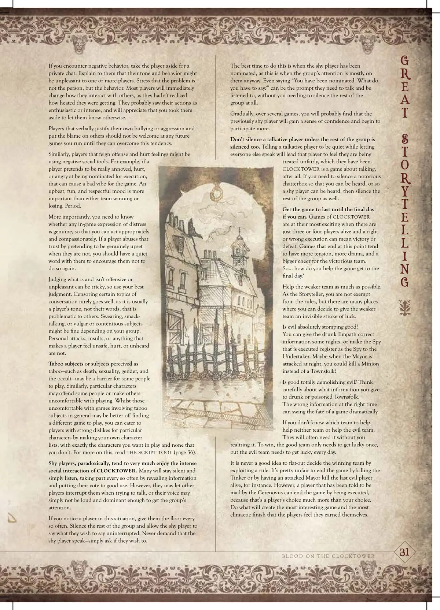
📝 第 33 页 AI 机翻对照（点击展开）
如果你遇到负面行为，将玩家叫到一旁进行私下交谈。向他们解释，他们的语气和行为可能会让一个或多个玩家感到不快。强调问题不在于人，而在于行为。大多数玩家会立即改变他们与他人的互动方式，因为他们没有意识到自己变得多么激动。他们可能认为自己的行为是热情或激烈的，并且会感谢你把他们叫到一旁告知他们情况。
那些口头为自己欺凌或侵略行为辩护并将责任归咎于他人的玩家，在你未来组织的任何游戏中都不受欢迎，直到他们能够克服这种倾向。
同样，那些假装 offended（受伤）和 hurt feelings（情感伤害）的玩家可能正在使用负面的社交手段。例如，如果一个玩家在被提名处决时假装真的 annoyed（恼怒）、hurt（受伤）或 angry（愤怒），这可能会给游戏带来不好的氛围。积极、有趣和尊重的氛围比任何一方赢或输都更重要。句号。
更重要的是，你需要知道任何游戏中表达 distress（痛苦）是否是真实的，以便你能适当和富有同情心地采取行动。如果玩家滥用这种信任，在他们并不真正 upset（ upset）的情况下假装 upset（ upset），你应该私下与他们交谈，鼓励他们不要再这样做。
判断什么是有 offensive（冒犯性）或 unpleasant（令人不快）的可能会很棘手，所以请运用你的最佳判断。审查某些谈话话题通常效果不佳，因为通常是一个玩家的语气，而不是他们的言辞，对他人造成了问题。 swearing（咒骂）、 smack-talking（垃圾话）或 vulgar（粗俗）或 contentious（有争议）的话题可能取决于你的群体。 personal attacks（人身攻击）、insults（侮辱）或任何让玩家感到不安全、受伤或被忽视的行为都是不允许的。
禁忌话题或被视为禁忌的话题——如 death（死亡）、sexuality（性）、gender（性别）和 the occult（神秘学）——可能会成为一些人参与游戏的障碍。同样，特定的 characters（角色）可能会冒犯某些人，或让其他人因 playing（扮演）而感到 uncomfortable（不适）。虽然那些通常对涉及禁忌话题的游戏感到 uncomfortable（不适）的玩家最好 find a different game to play（找另一款游戏玩），但你可以通过制作你自己的 character lists（角色列表）来照顾那些对特定 characters（角色）有强烈反感的玩家，列表中只包含你想要在游戏中出现的 characters（角色），没有你不想要的。关于这方面的更多信息，请阅读 THE SCRIPT TOOL（脚本工具）（第36页）。
害羞的玩家，矛盾的是，往往非常喜欢 CLOCKTOWER（钟楼）的 intense social interaction（激烈社交互动）。许多人会保持沉默，只是倾听，偶尔通过 revealing information（透露信息）和 putting their vote to good use（有效使用他们的投票）来参与。然而，当他们试图说话时，可能会让其他 players（玩家）打断他们，或者他们的声音可能不够 loud and dominant（响亮和主导）以获得群体的注意。
如果你注意到处于这种情况的玩家，给他们 the floor（发言权）every
如此频繁。让小组其他成员保持安静，让害羞的玩家能够 uninterrupted 地说出他们想说的话。永远不要强迫害羞的玩家发言——只需询问他们是否愿意发言。
这样做最好的时机是当害羞的玩家被提名时，因为这时小组的注意力主要在他们身上。即使只是说"你已被提名。你有什么要说的？"也可以成为他们发言并被倾听的契机，你完全不需要让小组其他成员保持安静。
经过几局游戏，你可能会发现，之前害羞的玩家会逐渐获得信心并开始更多地参与。
除非小组其他成员也保持安静，否则不要让健谈的玩家闭嘴。在让其他人发言的同时告诉健谈的玩家保持安静，会让该玩家感到自己受到了不公平的对待，而事实确实如此。
毕竟，CLOCKTOWER 是一款关于谈话的游戏。如果你需要让一个著名的健谈者闭嘴以便你能被听见，或者让害羞的玩家能被听见，那么也让小组其他成员保持安静。
如果可能的话，让游戏持续到最后一天。当只剩下三四个玩家存活，一次正确或错误的处决就意味着胜利或失败时，CLOCKTOWER 的游戏最为刺激。在这个阶段结束的游戏往往会有更多的紧张感、更多的戏剧性，以及为获胜团队更大的欢呼。
那么……你如何帮助游戏进行到最后一天？
尽可能帮助较弱的一方。作为故事讲述者，你并不受规则豁免，但在许多地方，你可以决定给较弱的一方一次无形的幸运眷顾。
邪恶方是否在完全碾压善良方？你可以在某些夜晚给醉酒的共情者提供正确信息，或者让被处决的间谍在殡葬师那里登记为间谍。也许当市长在夜间被攻击时，你可以杀死一个爪牙而不是一个镇民？
善良方是否在完全摧毁邪恶方？仔细考虑你给醉酒或中毒的镇民提供的信息。
在恰当的错误信息可以戏剧性地改变游戏的命运。
如果你不知道该帮助哪一方，就谁也不帮或帮助邪恶方。他们常常在你没有意识到的情况下需要帮助。要获胜，善良方只需要幸运一次，但邪恶方每天都需要幸运。
利用规则来决定获胜方从来都不是一个好主意。例如，通过杀死工匠或让被攻击的市长杀死最后一个存活的邪恶玩家来结束游戏是相当不公平的。然而，被 Cerenovus 告知要装疯的玩家可以通过被处决来结束游戏，因为这更多是玩家的选择而非你的选择。
做那些能创造最有趣游戏和最……
游戏简介
欢迎来到《Great Storytelling》！在这款游戏中，你将扮演一位故事讲述者，与其他玩家竞争，创作出最引人入胜、最精彩的故事。通过巧妙地运用你的卡牌和特殊能力，你将引导故事走向高潮，让其他玩家感受到他们自己赢得了这场精彩的故事对决。
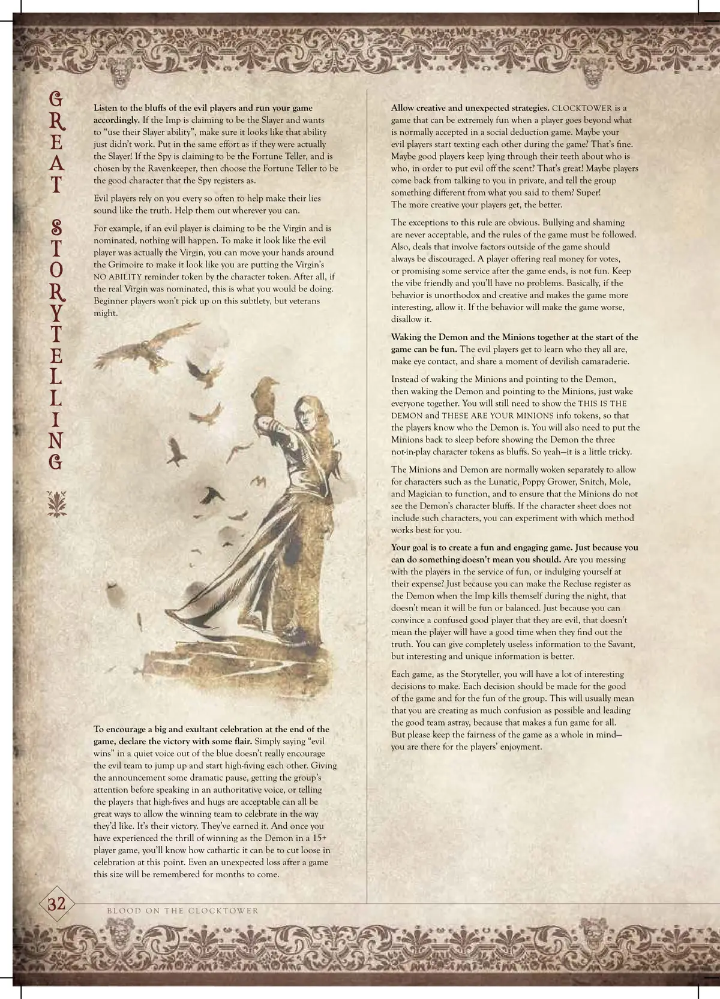
📝 第 34 页 AI 机翻对照（点击展开）
G
R
E
A
T
S
T
O
R
Y
T
E
L
L
I
N
G
钟楼上的血
听取邪恶玩家的虚张声势，并相应地主持游戏。如果小恶魔声称自己是屠夫并想要"使用屠夫能力"，确保看起来就像那个能力刚刚没有生效。投入与他们真的是屠夫时同样的努力！如果间谍声称自己是预言家，并且被乌鸦 keeper 选中，那么选择预言家作为间谍登记为的好角色。
邪恶玩家偶尔需要你的帮助来让他们的谎言听起来像真话。尽可能帮助他们。
例如，如果一个邪恶玩家声称自己是处女并被提名，什么都不会发生。为了让这个邪恶玩家看起来真的是处女，你可以在魔法书周围移动双手，看起来像是在将处女的"无能力"提示指示物放在角色指示物旁边。毕竟，如果真正的处女被提名，这就是你会做的事情。新手玩家可能不会注意到这种微妙之处，但老手可能会。
为了鼓励在游戏结束时有一个盛大而欢快的庆祝活动，用一些风格宣布胜利。只是突然用平静的声音说"邪恶赢了"并不能真正鼓励邪恶团队跳起来开始互相击掌。给宣布一些戏剧性的停顿，在用权威声音说话前吸引大家的注意力，或者告诉玩家击掌和拥抱是可以接受的，这些都是让获胜团队以他们喜欢的方式庆祝的好方法。这是他们的胜利。他们应得的。而且一旦你在15人以上的游戏中体验过作为恶魔获胜的刺激，你就会知道在这个时候尽情庆祝是多么宣泄。即使是这么大游戏后的意外失败，也会在未来几个月被记住。
允许创造性和意想不到的策略。当玩家超越社交推理游戏中通常接受的行为时，钟楼游戏可以变得极其有趣。也许你的邪恶玩家在游戏期间开始互相发短信？这没问题。也许好玩家一直对谁是谁撒谎，目的是让邪恶玩家偏离线索？这很棒！也许玩家从与你的私人谈话回来后，告诉群体一些与你对他们说的话不同的事情？超级！
玩家越有创造力，就越好。
这条规则的例外是明显的。欺凌和羞辱永远不可接受，并且必须遵守游戏规则。此外，应始终劝阻涉及游戏外因素的交易。玩家提供真钱换取选票，或承诺在游戏结束后提供某种服务，这并不有趣。保持
保持友好的氛围，你就不会有任何问题。基本上，如果行为非常规且富有创意，并且能让游戏更有趣，就允许它。如果行为会让游戏变得更糟，就不要允许。
在游戏开始时同时唤醒恶魔和爪牙会很有趣。邪恶玩家可以互相认识，进行眼神交流，并分享一个恶魔般的团结时刻。不要先唤醒爪牙并指向恶魔，然后再唤醒恶魔并指向爪牙，而是直接一起唤醒所有人。你仍然需要展示"这是恶魔"(THIS IS THE DEMON)和"这些是你的爪衣"(THESE ARE YOUR MINIONS)信息标记，这样玩家才知道谁是恶魔。在向恶魔展示三个未使用的角色标记作为虚张声势之前，你还需要将爪衣重新唤醒。所以是的——这有点棘手。
爪衣和恶魔通常被分开唤醒，以便让疯子(Poppy Grower)、告密者(Snitch)、鼹鼠(Mole)和魔术师(Magician)等角色能够正常运作，并确保爪衣不会看到恶魔的角色虚张声势。如果角色表中不包含此类角色，你可以尝试哪种方法最适合你。
你的目标是创造一个有趣且引人入胜的游戏。仅仅因为你能够做某件事并不意味着你应该做。你是在为了乐趣而戏弄玩家，还是在牺牲他们的利益来放纵自己？仅仅因为你可以让隐士(Recluse)在恶魔在夜间自杀时注册为恶魔，并不意味着这会很有趣或平衡。仅仅因为你可以说服一个困惑的好玩家他们其实是邪恶的，并不意味着当他们发现真相时会玩得开心。你可以给天才(Savant)完全无用的信息，但有趣和独特的信息更好。
每局游戏中，作为故事讲述者(Storyteller)，你将有很多有趣的决策要做。每个决策都应该为了游戏的整体利益和小组的乐趣而做出。这通常意味着你要尽可能地制造混乱，误导好人团队，因为这会让所有人都玩得开心。但请记住游戏的公平性——你是在为玩家的享受而存在。
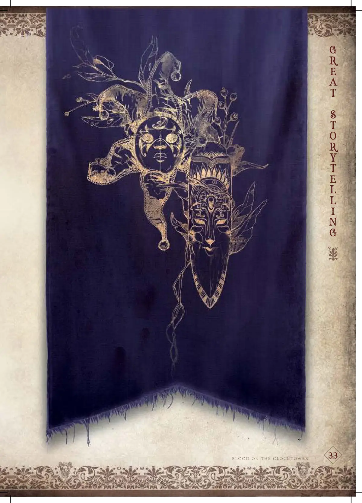
📝 第 35 页 AI 机翻对照（点击展开）
G
R
E
A
T
S
T
O
R
Y
T
E
L
L
I
N
G
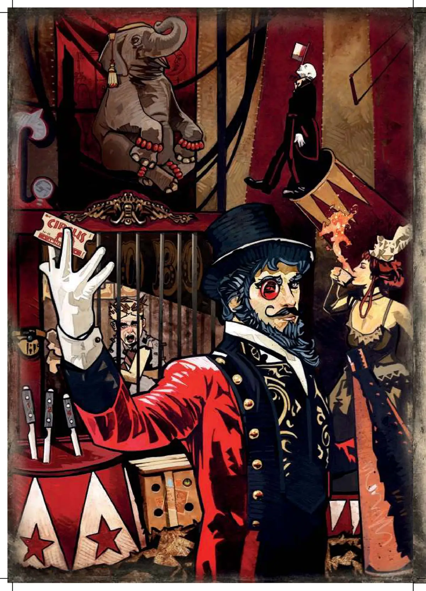
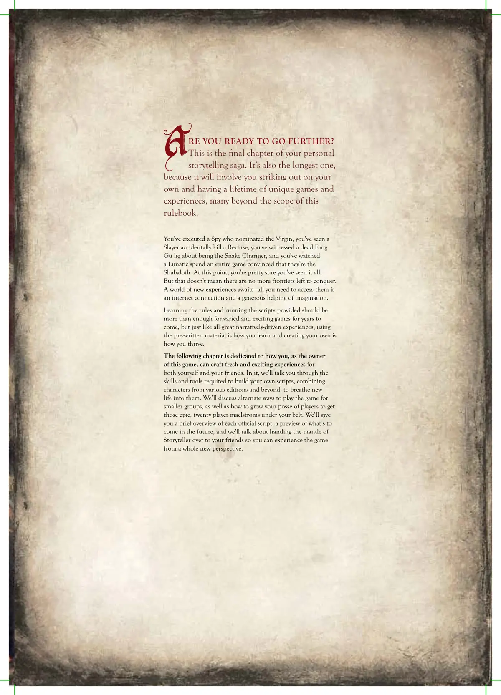
📝 第 37 页 AI 机翻对照（点击展开）
你处决了一名提名了处女的间谍，你看到一名屠夫意外杀死了一名隐士，你目睹了一条死去的方古谎称自己是蛇夫，你观看了一名疯子整场游戏都坚信自己是沙巴洛斯。此时，你相当确信你已经见识了一切。但这并不意味着没有更多等待征服的边疆。一个全新的体验世界 awaits——访问它们所需要的只是一个互联网连接和丰富的想象力。学习规则并运行提供的脚本应该足以在未来多年提供多样而精彩的游戏，但就像所有伟大的叙事驱动体验一样，使用预先编写的材料是你学习的方式，而创造你自己的材料才是你茁壮成长的方式。
下一章致力于向你，作为这款游戏的拥有者，如何为你和你的朋友创造新鲜而兴奋的体验。在章节中，我们将引导你了解构建自己脚本所需的技能和工具，结合来自各个版本及更远方的角色，为它们注入新的生命力。我们将讨论为较小群体游戏的替代方式，以及如何扩大你的玩家队伍，让你获得那些史诗般的、二十人玩家的漩涡体验。我们将简要概述每个官方脚本，预览未来的内容，并讨论将故事讲述者的职责交给你的朋友，以便你能从一个全新的角度体验游戏。
A
RE YOU READY TO GO FURTHER?
这是你个人叙事传奇的最后一章。它也是最长的章节，因为它将涉及你独自出发，拥有终身独特的游戏和体验，许多都超出了这本规则书的范围。
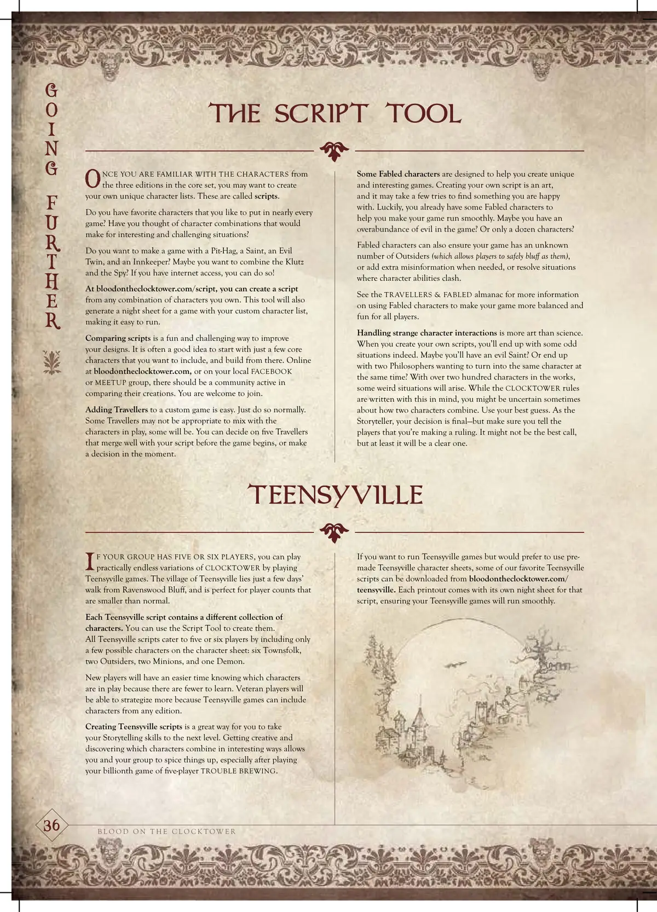
📝 第 38 页 AI 机翻对照（点击展开）
小镇奇谭
继 续 前 进
当你熟悉了核心套件中三个版本的角色后，你可能想要创建自己独特的角色列表。这些被称为剧本。
你有喜欢的角色，几乎每局游戏都想使用吗？你是否想过一些角色组合，能创造出有趣且具有挑战性的情况？
你想让游戏包含一个洞穴女妖、一个圣人、一个邪恶双胞胎和一个客栈老板吗？也许你想把笨蛋和间谍组合在一起？如果你能上网，你就可以做到！
在 bloodontheclocktower.com/script，你可以用你所拥有的任何角色组合创建一个剧本。这个工具还会为你的自定义角色列表生成一张夜间表单，使游戏运行变得简单。
比较剧本是一种有趣且具有挑战性的改进设计方式。通常最好先从几个你想包含的核心角色开始，然后在此基础上构建。在 bloodontheclocktower.com 上，或者在你的本地 FACEBOOK 或 MEETUP 小组中，应该有一个活跃的比较各自创作的社区。欢迎你加入。
在自定义游戏中添加旅行者很容易。只需正常添加即可。一些旅行者可能与游戏中的角色不太适合混合，有些则适合。你可以在游戏开始前确定五个与你的剧本融合得很好的旅行者，或者当场做出决定。
剧本工具
一些传说中的角色被设计用来帮助你创建独特有趣的游戏。创建自己的剧本是一门艺术，可能需要几次尝试才能找到让你满意的东西。幸运的是，你已经有一些传说中的角色可以帮助你让游戏顺利进行。也许你的游戏中邪恶过多？或者只有十几个角色？传说中的角色还可以确保你的游戏有未知数量的局外人（这允许玩家安全地冒充他们），或在需要时添加额外的错误信息，或解决角色能力冲突的情况。
有关使用传说中的角色使游戏对所有玩家更加平衡和有趣的更多信息，请参阅《旅行者与传说》年鉴。
处理奇怪的角色互动与其说是科学，不如说是艺术。当你创建自己的剧本时，你确实会遇到一些奇怪的情况。也许你会得到一个邪恶的圣人？或者最终有两个哲学家想要同时变成同一个角色？随着正在开发中的角色超过两百个，一些奇怪的情况将会出现。虽然钟楼规则是考虑到这一点而编写的，但有时你可能不确定两个角色如何组合。做出最好的猜测。作为故事讲述者，你的决定是最终的——但要确保告诉玩家你正在做出裁决。这可能不是最好的决定，
但至少这将是一个清晰的方案。
如果你们小组有五名或六名玩家，你可以通过玩 Teensyville 游戏，玩出 CLOCKTOWER 的几乎无尽的变体。Teensyville 村庄距离 Ravenswood Bluff 仅几天的路程，非常适合少于正常人数的玩家。
每个 Teensyville 剧本包含不同的角色集合。你可以使用剧本工具来创建它们。
所有 Teensyville 剧本都通过在角色表上只包含少数可能的角色来适应五名或六名玩家：六名镇民、两名外来者、两名爪牙和一名恶魔。
新玩家将更容易了解哪些角色在游戏中，因为需要学习的角色更少。资深玩家将能够进行更多策略规划，因为 Teensyville 游戏可以包含任何版本的角色。
创建 Teensyville 剧本是你将你的讲故事技能提升到下一个层次的绝佳方式。发挥创意，发现哪些角色以有趣的方式组合，让你和你的小组增添趣味，特别是在玩了无数局五人版 TROUBLE BREWING 之后。
如果你想运行 Teensyville 游戏但更喜欢使用预先制作的 Teensyville 角色表，我们最喜欢的一些 Teensyville 剧本可以从 bloodontheclocktower.com/teensyville 下载。每份打印件都附有该剧本的夜间表，确保你的 Teensyville 游戏能够顺利进行。
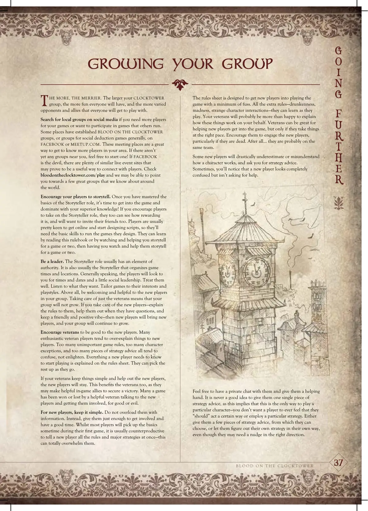
📝 第 39 页 AI 机翻对照（点击展开）
规则表旨在让新玩家以最少的麻烦开始游戏。所有额外的规则——醉酒、疯狂、奇怪的角色互动——他们可以在游戏过程中学习。老玩家很可能会很乐意为你解释这些机制是如何运作的。老玩家对于帮助新玩家入门很有用，但前提是他们要以适当的节奏进行。鼓励他们与新玩家互动，特别是当他们"死亡"时。毕竟……他们可能是在同一阵营。
一些新玩家会严重低估或误解角色的运作方式，并向你寻求策略建议。有时，你会注意到一个新玩家看起来完全困惑但没有寻求帮助。
可以私下与他们交谈并提供帮助。给他们单一的策略建议从来都不是好主意，因为这暗示着这是玩某个角色的唯一方式——你不希望玩家觉得他们"应该"以某种方式行动或采用特定策略。要么给他们几条策略建议供他们选择，要么让他们用自己的方式找出自己的策略，即使他们可能需要在正确的方向上稍作推动。
扩大你的游戏群体
人越多越欢乐。你的《钟楼血案》(CLOCKTOWER)游戏群体越大，每个人就越开心，而且每个人也能体验到更多样化的对手和盟友。
如果你需要更多玩家参与游戏，或者想参加他人组织的游戏，可以在社交媒体上寻找本地群体。有些地方在FACEBOOK或MEETUP.COM上已经建立了《钟楼血案》(BLOOD ON THE CLOCKTOWER)群体，或者通常是社交推理游戏的群体。这些聚会场所是认识你所在地区更多玩家的好方法。如果附近还没有任何群体，随时可以自己发起一个！如果FACEBOOK不适合你，有很多类似的现场活动网站可能证明是连接玩家的有用方式。查看bloodontheclocktower.com/play，我们也许能为你指向一些我们知道的全球优秀群体。
鼓励你的玩家担任故事讲述者。一旦你掌握了故事讲述者角色的基本知识，就该进入游戏并用你的专业知识主导游戏了！如果你鼓励玩家担任故事讲述者角色，他们也能看到这其中的回报，并会想要邀请他们的朋友加入。玩家通常很热衷于上网开始设计剧本，所以他们需要运行他们所设计游戏的基本技能。他们可以通过阅读这本规则书，或者通过观看并帮助你为一两场游戏担任故事讲述者来学习，然后让你观看并帮助他们为一两场游戏担任故事讲述者。
成为一个领导者。叙述者角色通常带有权威性。通常也是叙述者负责安排游戏时间和地点。一般来说，玩家会向你询问时间和日期，并期待你提供一些社交上的领导。善待他们。倾听他们的需求。根据他们的兴趣和游戏风格调整游戏。最重要的是，对你团体中的新玩家要热情友好。只照顾老玩家意味着你的团体不会成长。如果你照顾新玩家——向他们解释规则，在他们有疑问时提供帮助，保持友好积极的氛围——那么新玩家会带来更多新玩家，你的团体就会持续成长。
鼓励老玩家善待新玩家。许多热情的老玩家倾向于向新玩家过度解释。太多不重要的游戏规则、太多角色例外情况、太多策略建议往往会造成困惑，而非启发。新玩家开始游戏所需的一切都在规则表上有说明。他们可以在游戏过程中学习其余内容。
如果你的老玩家保持简单并帮助新玩家，新玩家就会留下来。这对老玩家也有好处，因为他们可能会在游戏中获得有用的盟友来确保胜利。许多游戏的胜负取决于一位友善的老玩家与新玩家交流并让他们参与进来，无论是对是坏。
对于新玩家，保持简单。不要用过多信息淹没他们。相反，只给他们足够的信息让他们参与进来并玩得开心。虽然大多数玩家会在他们的第一局游戏中掌握基本规则，但一次性告诉新玩家所有规则和主要策略通常是适得其反的——这可能会让他们完全不知所措。
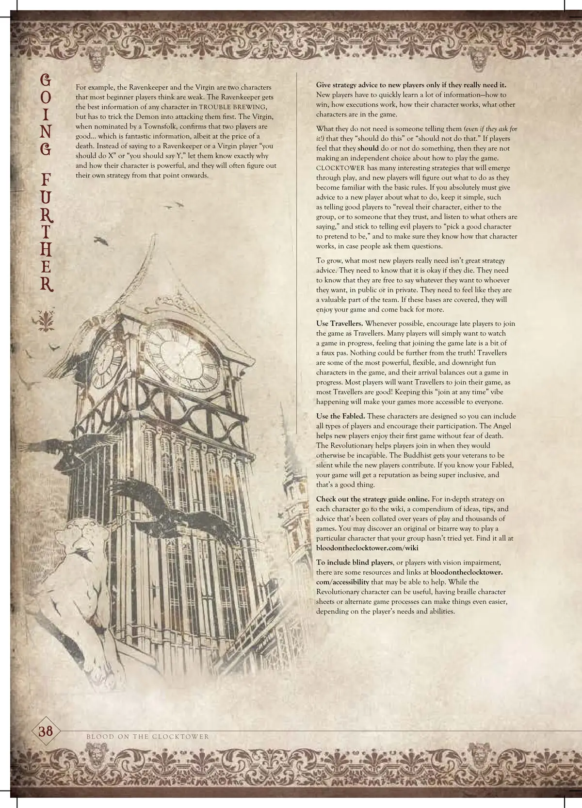
📝 第 40 页 AI 机翻对照（点击展开）
继续前进
例如，守鸦人（Ravenkeeper）和处女（Virgin）是大多数新手玩家认为很弱的两个角色。守鸦人可以获得《麻烦 brewing》（TROUBLE BREWING）中任何角色最好的信息，但必须先欺骗恶魔攻击他们。处女被镇民提名时，会确认两名玩家是好人……这是极好的信息，尽管代价是一条人命。不要对守鸦人或处女玩家说"你应该做X"或"应该说Y"，而是让他们确切地知道为什么以及他们的角色有多强大，他们通常从那时起就会想出自己的策略。
只有在新玩家真正需要时才提供策略建议。新玩家必须快速学习大量信息——如何获胜、处决如何运作、他们的角色如何运作、游戏中有哪些其他角色。
他们不需要的是有人告诉他们（即使他们要求！）他们"应该做这个"或"不应该做那个"。如果玩家觉得他们应该做或不应该做什么，那么他们就没有对如何玩游戏做出独立的选择。《钟楼》（CLOCKTOWER）有许多有趣的策略会在游戏中浮现，新玩家会在熟悉基本规则后弄清楚该做什么。如果你绝对必须给新玩家提供该做什么的建议，保持简单，比如告诉好玩家"向群体或他们信任的人揭示自己的角色，并倾听他人的发言"，并坚持告诉邪恶玩家"选择一个好角色来假装"，并确保他们知道该角色如何运作，以防有人问他们问题。
要成长，大多数新玩家真正需要的不是出色的策略建议。他们需要知道即使死亡也没关系。他们需要知道他们可以自由地对任何人说任何他们想说的话，无论是在公开场合还是私下。他们需要感觉自己是有价值的团队成员。如果这些基础都覆盖到了，他们会享受你的游戏并再次参与。
使用旅行者（Travellers）。尽可能鼓励晚到的玩家以旅行者身份加入游戏。许多玩家可能只想观看正在进行的游戏，觉得中途加入游戏有点失礼。事实远非如此！旅行者是游戏中一些最强大、最灵活、最有趣的角色，他们的到来平衡了正在进行的游戏。大多数玩家会希望旅行者加入他们的游戏，因为大多数旅行者都是好人！保持这种"随时加入"的氛围会让你的游戏对每个人来说都更容易参与。
使用传说角色（Fabled）。这些角色设计得可以让你包容各种类型的玩家并鼓励他们的参与。天使（Angel）
帮助新玩家享受他们的第一局游戏，而不用担心死亡。
革命者（The Revolutionary）帮助那些原本无法参与的玩家加入游戏。佛教徒（The Buddhist）让你的老玩家保持沉默，同时让新玩家做出贡献。如果你了解你的传说角色（Fabled），你的游戏将会获得超级包容的好名声，这是一件好事。
在线查看策略指南。有关每个角色的深入策略，请访问百科全书（wiki），这是一个多年来通过数千局游戏收集的想法、技巧和建议的汇编。你可能会发现一种原创的或奇特的方式来玩某个特定角色，而你的小组还没有尝试过。在 bloodontheclocktower.com/wiki 上找到所有内容。
为了包含盲人或视力受损的玩家，bloodontheclocktower.com/accessibility 上有一些资源和链接可能能够提供帮助。虽然革命者角色可能有用，但根据玩家的需求和能力，提供盲文角色表或替代的游戏流程可以让事情变得更加容易。
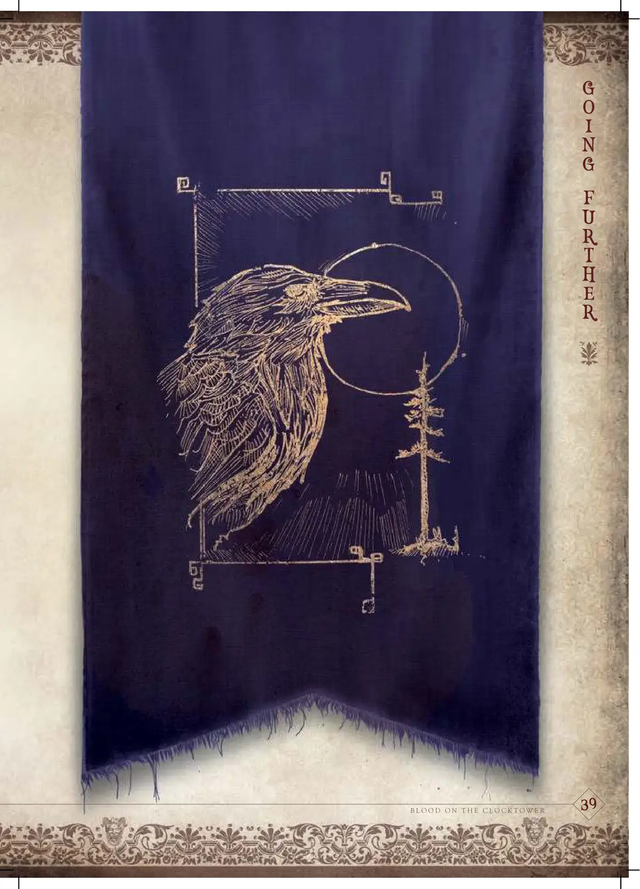
📝 第 41 页 AI 机翻对照（点击展开）
GOING FURTHER
游戏扩展
《卡坦岛》有许多官方扩展，可以改变游戏玩法并增加新的策略维度。以下是一些最受欢迎的扩展：
- 《航海家：卡坦岛的新世界》(Seafarers of Catan)：这个扩展引入了海洋板块和船只，允许玩家探索和定居岛屿。它包括多个场景，提供不同的挑战和游戏体验。
- 《城市与骑士》(Cities & Knights)：这个扩展为《卡坦岛》增加了更复杂的策略元素。玩家可以建造城市、发展贸易，并抵御野蛮人入侵。骑士系统为游戏增添了防御和进攻的新维度。
- 《探索者与商人》(Explorers & Merchants)：这个扩展结合了《航海家》和《城市与骑士》的元素，提供了更丰富的游戏体验。它引入了新的资源、商品和特殊能力。
- 《古代人》(Traders & Barbarians)：这个扩展引入了新的游戏机制，如金矿、商人 caravan 和 barbarian 攻击。它还包括多个场景，提供不同的游戏变体。
- 《大航海时代》(The Great Rivers)：这个扩展增加了河流板块，允许玩家沿着河流建立贸易路线。它提供了新的战略机会和挑战。
- 《发明家与发明》(Inventors & Inventions)：这个扩展引入了发明系统，玩家可以研发新技术来获得特殊能力。它为游戏增添了科技发展的维度。
自定义场景
除了官方扩展外，玩家还可以创建自己的场景和变体规则。这可以通过修改资源分布、调整胜利条件或添加特殊事件来实现。自定义场景可以为游戏带来新鲜感和重玩价值。
社区与比赛
《卡坦岛》拥有庞大的玩家社区，定期举办比赛和活动。玩家可以通过参加这些活动来提高技能，结识其他爱好者，并体验不同的游戏风格和策略。
数字版本
《卡坦岛》也有多个数字版本，包括移动应用和在线平台。这些版本提供了便捷的游戏方式，允许玩家与世界各地的对手对战，或者与朋友在线联机。
收藏版与特别版
《卡坦岛》有多种收藏版和特别版，包括木制版图、定制指示物和精美包装。这些版本适合收藏家，也为游戏增添了独特的视觉和触觉体验。
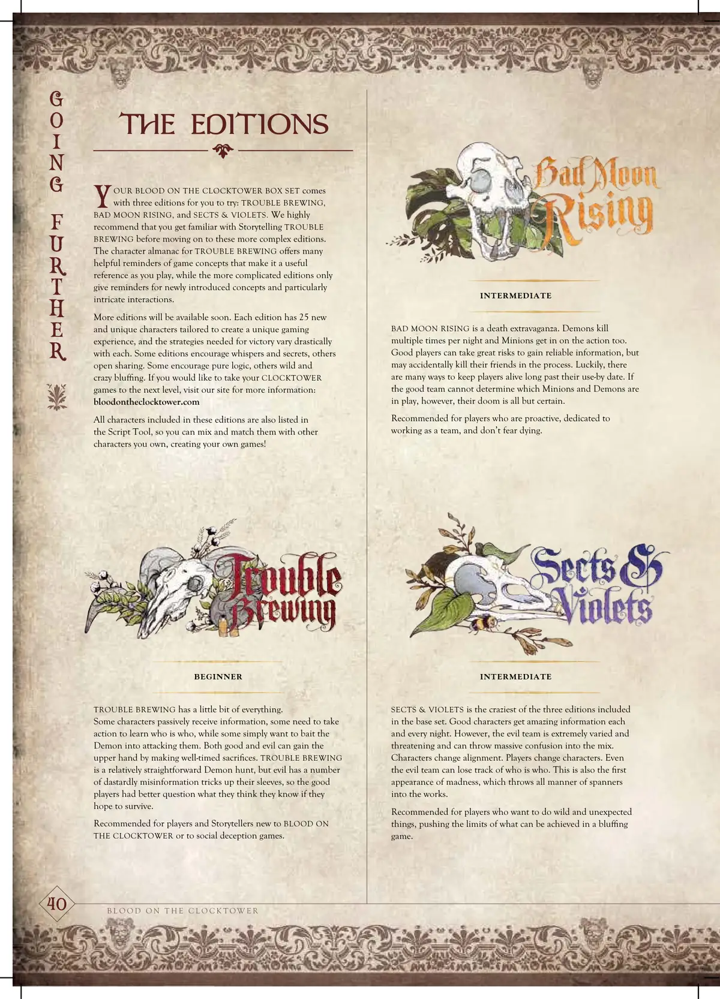
📝 第 42 页 AI 机翻对照（点击展开）
你
的《血染钟楼》盒装套装包含三个版本供你尝试：《麻烦 brewing》、《坏月亮升起》和《教派与紫罗兰》。我们强烈建议你在继续玩这些更复杂的版本之前，先熟悉《麻烦 brewing》的故事讲述模式。《麻烦 brewing》的角色年鉴提供了许多游戏概念的有用提醒，使其成为游戏过程中的有用参考，而更复杂的版本只对新引入的概念和特别复杂的互动提供提醒。
更多版本即将推出。每个版本都有25个新的独特角色，旨在创造独特的游戏体验，而获胜所需的策略也各不相同。一些版本鼓励耳语和秘密，另一些则鼓励公开分享。一些版本鼓励纯粹的逻辑，另一些则鼓励疯狂大胆的虚张声势。如果你想将你的《血染钟楼》游戏提升到新水平，请访问我们的网站获取更多信息：bloodontheclocktower.com
这些版本中包含的所有角色也列在脚本工具中，因此你可以将它们与你拥有的其他角色混合搭配，创造属于你自己的游戏！
继
续
深
入
版本
中级
《教派与紫罗兰》是基础套装中三个版本里最疯狂的一个。善良角色每晚都能获得惊人的信息。然而，邪恶团队极其多样且具有威胁性，可能会造成巨大的混乱。角色会改变阵营，玩家会更换角色，甚至邪恶团队也可能失去谁是谁的踪迹。这也是疯狂首次出现，它给一切工作抛出了各种障碍。
推荐给那些想要做疯狂意外的事情，推动虚张声势游戏所能达到的极限的玩家。
中级
《坏月亮升起》是一场死亡盛宴。恶魔每晚多次杀人，爪牙也参与其中。善良玩家可以冒巨大风险来获取可靠信息，但在此过程中可能会意外杀死朋友。幸运的是，有很多方法可以让玩家在过了"使用期限"后仍然存活。然而，如果善良团队无法确定哪些爪牙和恶魔在游戏中，他们的厄运几乎是注定的。
推荐给积极主动、致力于团队合作、不害怕死亡的玩家。
初级
《麻烦 brewing》包含了各种元素。一些角色被动接收信息，一些需要采取行动来了解谁是谁，而一些则只是想诱使恶魔攻击他们。善良和邪恶都可以通过适时牺牲来获得优势。《麻烦 brewing》是一个相对直接的恶魔狩猎，但邪恶有许多卑鄙的误导伎俩，所以善良
玩家最好质疑他们自认为所知的一切，如果他们希望生存下去。
推荐给初次接触《BLOOD ON THE CLOCKTOWER》或社交欺骗类游戏的玩家和故事讲述者。
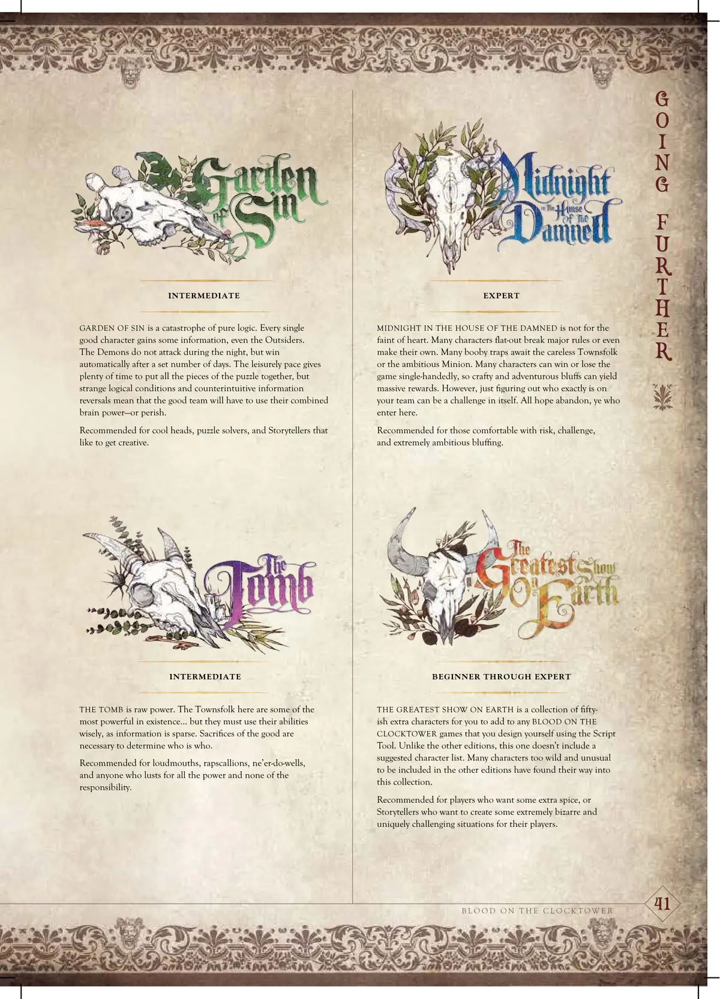
📝 第 43 页 AI 机翻对照（点击展开）
G
O
I
N
G
F
U
R
T
H
E
R
专家模式
《午夜在诅咒之屋》(MIDNIGHT IN THE HOUSE OF THE DAMNED)不适合心脏脆弱的人。许多角色完全打破主要规则甚至制定自己的规则。许多陷阱等待着粗心的镇民或雄心勃勃的爪牙。许多角色可以单方面赢得或输掉游戏，因此狡猾和大胆的虚张声势可能带来巨大回报。然而，仅仅弄清楚谁 exactly 在你的团队中本身就是一项挑战。所有希望放弃，进入此地者。
推荐给那些习惯冒险、挑战和极度大胆虚张声势的玩家。
初学者到专家
《地球上最盛大的表演》(THE GREATEST SHOW ON EARTH)是一个包含大约五十个额外角色的集合，你可以使用脚本工具(Script Tool)为你自己设计的任何《血染钟楼》(BLOOD ON THE CLOCKTOWER)游戏添加这些角色。与其他版本不同，这个版本不包括建议的角色列表。许多过于狂野和不寻常以至于无法包含在其他版本中的角色都找到了进入这个集合的途径。
推荐给想要一些额外刺激的玩家，或者想要为玩家创造一些极其怪异和独特挑战情况的主持人(Storyteller)。
中级
《坟墓》(THE TOMB)是原始的力量。这里的镇民是现存最强大的...但他们必须明智地使用自己的能力，因为信息稀少。善良者的牺牲是必要的，以确定谁是谁。
推荐给那些爱说大话、流氓、无赖以及渴望拥有所有权力而不承担任何责任的人。
中级
《罪恶花园》(GARDEN OF SIN)是一场纯粹逻辑的灾难。每个善良的角色都会获得一些信息，即使是局外人(Outsiders)。恶魔在夜间不攻击，但在设定天数后自动获胜。悠闲的节奏给了足够的时间把所有的拼图 pieces 拼在一起，但奇怪的逻辑条件和反直觉的信息反转意味着善良的团队将不得不使用他们的大脑力量——否则就会灭亡。
推荐给冷静的头脑、解谜者以及喜欢创造性地发挥的主持人(Storyteller)。
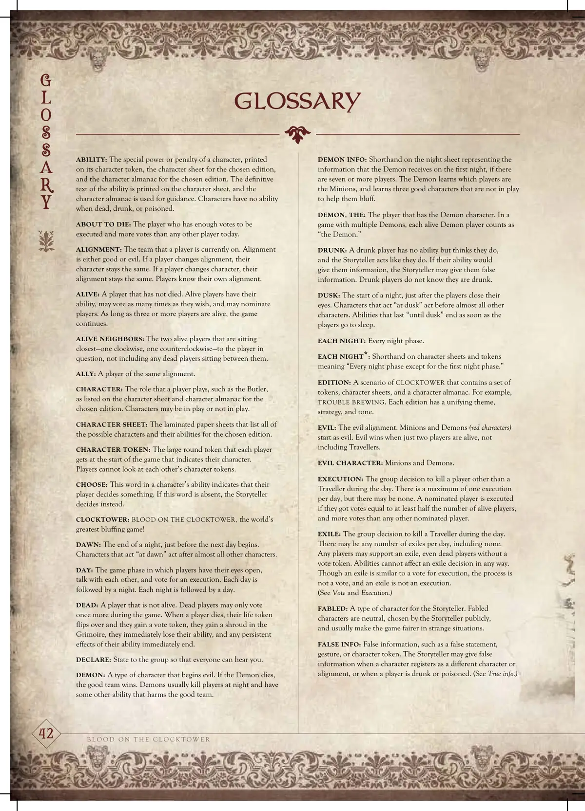
📝 第 44 页 AI 机翻对照（点击展开）
术
语
表
恶魔信息：夜幕表上的简写，代表如果玩家数量为七人或更多时，恶魔在第一个夜晚收到的信息。恶魔会得知哪些玩家是爪牙，并得知三个未在游戏中使用的好角色，以帮助他们进行欺骗。
恶魔：拥有恶魔角色的玩家。在有多个恶魔的游戏中，每个存活的恶魔玩家都算作"恶魔"。
醉汉：醉汉玩家没有能力，但以为自己有，而故事讲述者会表现得好像他们确实有。如果他们的能力本应为他们提供信息，故事讲述者可能会给他们虚假信息。醉汉玩家不知道自己是醉汉。
黄昏：夜晚的开始，就在玩家闭上眼睛之后。在"黄昏"时行动的角色几乎在其他所有角色之前行动。持续"直到黄昏"的能力在玩家入睡时立即结束。
每个夜晚：每个夜晚阶段。
每个夜晚*：角色卡和指示物上的简写，意为"除第一个夜晚阶段外的每个夜晚阶段"。
版本：CLOCKTOWER的一个场景，包含一组指示物、角色卡和角色年鉴。例如，TROUBLE BREWING（麻烦 brewing）。每个版本都有一个统一的主题、策略和基调。
邪恶：邪恶阵营。爪牙和恶魔（红色角色）开始时是邪恶的。当只剩下两名玩家（不包括旅行者）时，邪恶阵营获胜。
邪恶角色：爪牙和恶魔。
处决：在白天处决一名非旅行者的玩家的集体决定。每天最多进行一次处决，但也可能没有。如果被提名玩家获得的票数至少等于存活玩家数量的一半，并且比任何其他被提名玩家获得的票数都多，则该被提名玩家被处决。
流放：在白天流放一名旅行者的集体决定。每天可以进行任意次数的流放，包括零次。任何玩家都可以支持流放，甚至包括没有投票指示物的死亡玩家。能力不能以任何方式影响流放决定。尽管流放类似于处决投票，但这个过程不是投票，流放也不是处决。（参见投票和处决）
传说：故事讲述者的一种角色类型。传说角色是中立的，由故事讲述者公开选择，通常能在特殊情况下使游戏更加公平。
虚假信息：虚假的信息，如虚假的陈述、手势或角色指示物。当角色注册为不同角色或阵营时，或者当玩家是醉汉或中毒时，故事讲述者可以提供虚假信息。（参见真实信息）
能力：角色的特殊能力或惩罚，印在其角色指示物、所选版本的角色卡和所选版本的角色年鉴上。能力的权威文本印在角色卡上，并且
人物年鉴用于指导。角色在死亡、醉酒或中毒时没有能力。
即将死亡：获得足够票数被处决且今天获得的票数多于任何其他玩家的玩家。
阵营：玩家当前所属的团队。阵营要么是善良，要么是邪恶。如果玩家改变阵营，他们的角色保持不变。如果玩家改变角色，他们的阵营保持不变。玩家知道自己的阵营。
存活：尚未死亡的玩家。存活玩家拥有他们的能力，可以随意投票多次，并且可以提名玩家。只要有三名或更多玩家存活，游戏就会继续。
存活邻居：距离指定玩家最近的两位存活玩家——一位顺时针，一位逆时针——不包括他们之间任何已死亡的玩家。
盟友：相同阵营的玩家。
角色：玩家扮演的角色，例如管家，如所选版本的角色表和人物年鉴中所列。角色可能处于游戏中或未处于游戏中。
角色表：列出所选版本所有可能角色及其能力的覆膜纸表。
角色指示物：每位玩家在游戏开始时获得的大圆形指示物，用于表示他们的角色。玩家不能查看彼此的角色指示物。
选择：角色能力中的这个词表示他们的玩家决定某事。如果这个词不存在，则由故事讲述者决定。
钟楼：《血染钟楼》，世界上最伟大的虚张声势游戏！
黎明：夜晚的结束，恰好在下一天开始之前。在"黎明"行动的角色在几乎所有其他角色之后行动。
白天：玩家睁着眼睛、互相交谈并投票处决的游戏阶段。每一天之后是一个夜晚。每一个夜晚之后是一个白天。
死亡：不存活的玩家。死亡玩家在游戏中只能再投票一次。当玩家死亡时，他们的生命指示物会翻转，他们获得一个投票指示物，他们在《魔典》中获得一个裹尸布，他们立即失去能力，并且他们能力的任何持续效果立即结束。
声明：向群体陈述，以便每个人都能听到你。
恶魔：一种开始时为邪恶的角色类型。如果恶魔死亡，善良团队获胜。恶魔通常在夜晚杀死玩家，并且有一些其他伤害善良团队的能力。
术语表
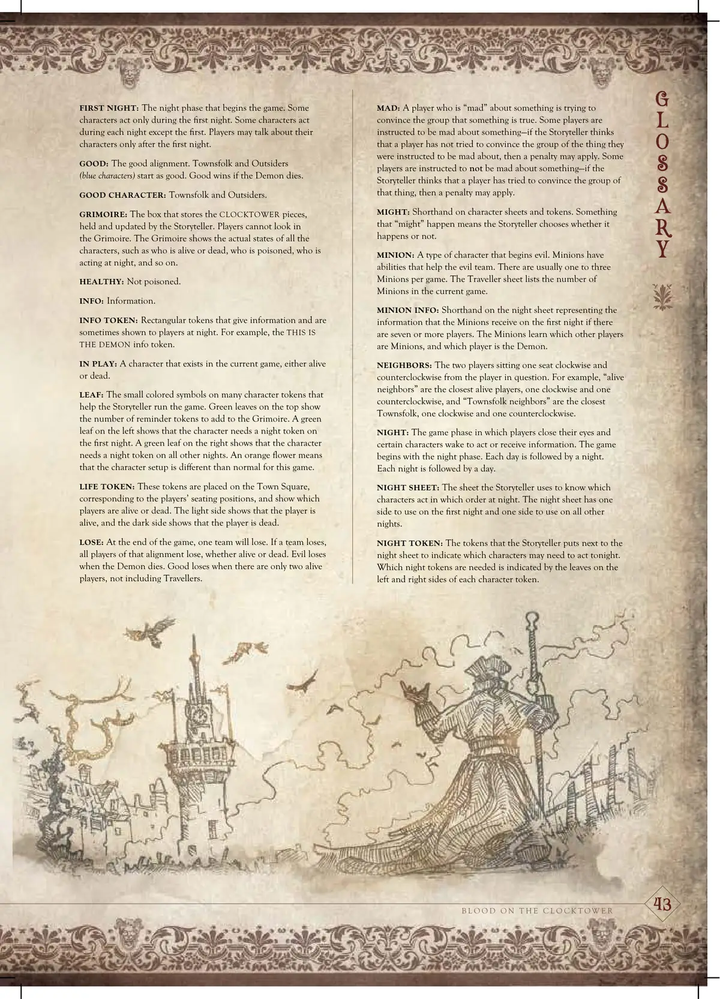
📝 第 45 页 AI 机翻对照（点击展开）
术
语
表
疯狂：一个"疯狂"的玩家正在试图说服群体某件事是真的。一些玩家被指示对某件事保持疯狂——如果故事讲述者认为玩家没有试图说服群体他们被指示要疯狂的事情，那么可能会施加惩罚。一些玩家被指示不要对某件事保持疯狂——如果故事讲述者认为玩家试图说服群体那件事，那么可能会施加惩罚。
力量：角色表和指示物上的简写。某事"可能"发生意味着故事讲述者选择它是否发生。
爪牙：一种开始时邪恶的角色类型。爪牙有帮助邪恶团队的能力。每局游戏通常有一到三个爪牙。旅行者表列出了当前游戏中的爪牙数量。
爪牙信息：夜表上的简写，表示如果有七名或更多玩家，爪牙在第一晚收到的信息。爪牙会了解到哪些其他玩家是爪牙，以及哪个玩家是恶魔。
邻居：距离指定玩家最近的顺时针和逆时针方向的各一名玩家。例如，"活着的邻居"是指最近的活着的玩家，一名顺时针方向，一名逆时针方向；"城镇居民邻居"是指最近的城镇居民，一名顺时针方向，一名逆时针方向。
夜晚：玩家闭上眼睛，某些角色醒来行动或接收信息的游戏阶段。游戏以夜晚阶段开始。每个白天之后是一个夜晚。每个夜晚之后是一个白天。
夜表：故事讲述者使用的表格，用于知道哪些角色在夜晚按什么顺序行动。夜表有一面用于第一晚，另一面用于所有其他夜晚。
夜晚指示物：故事讲述者放在夜表旁边的指示物，表示哪些角色今晚可能需要行动。需要哪些夜晚指示物由每个角色指示物左右两侧的叶子表示。
第一晚：开始游戏的夜晚阶段。一些角色只在第一晚行动。一些角色在每个夜晚（除第一晚外）行动。玩家只能在第一晚之后谈论自己的角色。
善良：善良阵营。城镇居民和外来者（蓝色角色）开始时是善良的。如果恶魔死亡，善良阵营获胜。
善良角色：城镇居民和外来者。
魔法书：存放钟楼零件的盒子，由故事讲述者持有和更新。玩家不能查看魔法书。魔法书显示所有角色的实际状态，例如谁活着或死亡，谁被下毒，谁在夜晚行动，等等。
健康：未被下毒。
信息：信息。
信息指示物：提供信息的矩形指示物，
有时会在夜晚向玩家展示。例如，这是恶魔信息指示物。
游戏中：存在于当前游戏中的角色，无论生死。
叶子：许多角色指示物上的小型彩色符号，帮助主持人运行游戏。顶部的绿色叶子显示需要添加到魔法书的提醒指示物数量。左侧的绿色叶子表示该角色在第一个夜晚需要夜晚指示物。右侧的绿色叶子表示该角色在所有其他夜晚都需要夜晚指示物。橙色花朵表示该角色的设置与本次游戏的常规设置不同。
生命指示物：这些指示物放置在城镇广场上，对应玩家的座位位置，显示哪些玩家是生是死。浅色面表示玩家存活，深色面表示玩家死亡。
失败：游戏结束时，一方将失败。如果一方失败，该阵营的所有玩家都将失败，无论生死。当恶魔死亡时，邪恶阵营失败。当只剩下两名存活玩家（不包括旅行者）时，善良阵营失败。
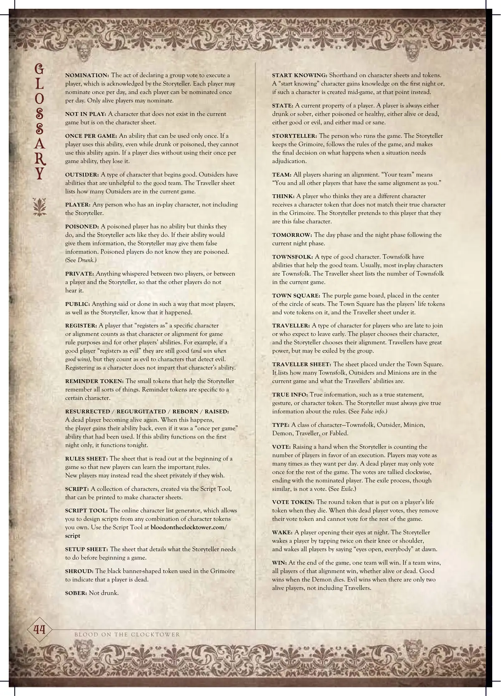
📝 第 46 页 AI 机翻对照（点击展开）
词
汇
表
START KNOWING：角色表和指示物上的简写方式。
"START KNOWING"（初始知晓）角色在第一个夜晚获得知识，或者，如果这样的角色在游戏中途被创建，则在那一刻获得知识。
STATE：玩家的当前属性。玩家总是处于醉酒或清醒状态，中毒或健康状态，存活或死亡状态，善良或邪恶状态，以及疯狂或理智状态之一。
STORYTELLER：主持游戏的人。故事讲述者保管《魔法书》，遵循游戏规则，并在需要裁决的情况下对发生的事情做出最终决定。
TEAM：共享阵营的所有玩家。"你的团队"意味着"你和你所有具有相同阵营的其他玩家"。
THINK：认为自己扮演不同角色的玩家会收到一个与《魔法书》中其真实角色不匹配的角色指示物。故事讲述者向该玩家假装他们是这个虚假角色。
TOMORROW：当前夜晚阶段之后的白天阶段和夜晚阶段。
TOWNSFOLK：一种善良角色类型。镇民拥有帮助善良阵营的能力。通常，游戏中大多数角色都是镇民。《旅行者表》列出了当前游戏中的镇民数量。
TOWN SQUARE：紫色游戏板，放置在座位圈的中心。城镇广场上有玩家的生命指示物和投票指示物，以及下方的《旅行者表》。
TRAVELLER：为迟到加入或预期提前离开的玩家准备的角色类型。玩家选择自己的角色，故事讲述者选择他们的阵营。旅行者拥有强大的能力，但可能会被群体流放。
TRAVELLER SHEET：放置在城镇广场下方的表格。它列出了当前游戏中有多少镇民、外来者和爪牙，以及旅行者的能力是什么。
TRUE INFO：真实信息，如真实陈述、手势或角色指示物。故事讲述者必须始终提供关于规则的准确信息。（参见虚假信息。）
TYPE：角色类别——镇民、外来者、爪牙、恶魔、旅行者或传说角色。
VOTE：当故事讲述者计算支持执行提案的玩家数量时举手。玩家每天可以投票任意次数。死亡玩家在游戏剩余时间内只能投票一次。投票按顺时针方向统计，以被提名的玩家结束。流放过程虽然相似，但不是投票。（参见流放。）
VOTE TOKEN：当玩家死亡时放置在其生命指示物上的圆形指示物。当这个死亡玩家投票时，他们会取下自己的投票指示物，并且不能在游戏剩余时间内再次投票。
WAKE：玩家在夜晚睁开眼睛。故事讲述者通过轻拍玩家的膝盖或肩膀两次来唤醒玩家，并在黎明时说"大家睁开眼睛"来唤醒所有玩家。
胜利条件
在游戏结束时，一个团队将获胜。如果一个团队获胜，该阵营的所有玩家（无论生死）都将获胜。当恶魔死亡时，善良阵营获胜。当只剩下两名存活的玩家（不包括旅行者）时，邪恶阵营获胜。
提名
宣布对玩家进行处决的团体投票，由故事讲述者确认。每位玩家每天可以提名一次，每位玩家每天只能被提名一次。只有存活的玩家可以提名。
未使用角色
当前游戏中不存在但存在于角色表上的角色。
每局一次
一种只能使用一次的能力。如果玩家使用了此能力，即使是在醉酒或中毒状态下，也不能再次使用此能力。如果玩家在未使用其每局一次能力的情况下死亡，他们将失去此能力。
外来者
一种开始时为善良阵营的角色类型。外来者拥有对善良阵营无益的能力。旅行者表格列出了当前游戏中有多少外来者。
玩家
拥有在场角色的任何人，不包括故事讲述者。
中毒
中毒的玩家没有能力，但认为自己有，故事讲述者也表现得好像他们有。如果他们的能力会为他们提供信息，故事讲述者可能会给他们虚假信息。中毒的玩家不知道自己中毒了。（参见醉酒。）
私密
两名玩家之间，或玩家与故事讲述者之间低声交谈，其他玩家听不到的内容。
公开
以大多数玩家以及故事讲述者都知道发生了什么的方式所说或所做。
注册
"注册为"特定角色或阵营的玩家，在游戏规则目的和其他玩家的能力中，被视为该角色或阵营。例如，如果一个善良玩家"注册为邪恶"，他们仍然是善良的（并在善良阵营获胜时获胜），但在检测邪恶的角色眼中，他们被视为邪恶。注册为某个角色不会获得该角色的能力。
提醒指示物
帮助故事讲述者记住各种事情的小指示物。提醒指示物特定于某个角色。
复活 / 呕吐 / 重生 / 复活
死亡的玩家再次变为存活状态。当这种情况发生时，玩家会重新获得他们的能力，即使这是已经使用过的"每局一次"能力。如果此能力仅在第一个夜晚有效，则今夜有效。
规则表
在游戏开始时宣读的表格，以便新玩家可以学习重要规则。新玩家也可以选择私下阅读此表格。
剧本
通过剧本工具创建的一系列角色，可以打印成角色表。
剧本工具
在线角色列表生成器，允许您从任何角色指示物组合中设计剧本。
设置表
详细说明故事讲述者在开始游戏前需要做什么的表格。
面纱
在《格里莫尔》(Grimoire)中使用的黑色横幅形状的指示物，用于表示玩家已死亡。
清醒
未喝醉。